B2 · Fable 5.2 · attempt fvMDPEp
Batch fb2 · job fb2_B_EXP22004082_26_Oct_2022_claude-fable-5-2 · trial B_EXP22004082_26_Oct_2022__fvMDPEp. Long tool outputs are cut at 6,000 characters.
0.59
32.6
$10.09
532
99
cd /task; cat inputs/plan.md; echo ----; cat inputs/plate_layout.csv; ls -la inputs/raw outputs; ls /root/.claude/projects/-task/memory/ 2>/dev/null; head -c 1500 inputs/start.flow
# Plan: EXP22004082 | Testing Flow Cytometry based Caspase Assays (run of 2022-10-25 / 2022-10-26) Notebook text as written by the scientist, up to acquisition of this run. Sections belonging to other runs of this entry are omitted. Row and column labels in the plate tables were added for readability. ## Background Loss of function of PGRN has been shown to negatively impact neural cell health reflected by increased cell death and caspase activity. Caspases are important mediators of the cell death pathway (apoptosis). Caspases are a group of proteases that result in cleavage of protein substrates subsequently leading to cell disassembly. For the PGRN RNAswap program we will want to measure caspase activity in iPSC derived neurons before and after adding the PGRN RNAswap constructs to ensure that PGRN protein replacement is rescuing the health of neurons. Previously I have tested out some caspase activity kits but now I will be trying to detect caspase levels using flow cytometry. ## Objective Measure caspase 3 activity using flow cytometry in H4 cells to practice using this assay which will eventually be used in iPSC derived neurons. ## Materials (entry-level list) - H4 WT cells - H4 PGRN KO E1 - H4 PGRN KO E3 - H4 media - CellEvent Caspase-3/7 Green Flow Cytometry Assay Kit - Cell Signalling (Cleaved Caspase-3 (Asp175) Antibody (Alexa Fluor® 488 Conjugate) #9669) - Camptothecin (abcam) ## DAY 2022-10-25 Test out Cell Signaling Cleaved-Caspase 3 Alexa-flour 488 antibody - Split H4 cells into 24 well plate (50K cells/well) | | 1 | 2 | 3 | 4 | 5 | 6 | |---|---|---|---|---|---|---| | A | WT | WT | WT | WT | WT | WT | | B | E1 | E1 | E1 | E1 | E1 | E1 | | C | E3 | E3 | E3 | E3 | E3 | E3 | | D | | | | | | | 2. Let cells grow for o/n ## DAY 2022-10-26 Run Intracellular flow: ### Materials - 96w round bottom plate - Intracellular Fixation & Permeabilization Buffer Set (cat. no. 88-8824) - Flow Cytometry Staining Buffer (cat. no. 00-4222) - Zombie NIR Biolgend (423105) - Caspase-3 antibody (9669S) ### Procedure - Aspirate all media - PBS wash (200uL PBS) - Aspirate PBS - Add 10x Trypsin (150ul/well) - Put back in incubator (5min) - Add FBS (75ul/well) - Move all solution and cells to a round-bottom 96w plate. Check the empty plate by microscope to confirm that the majority of cells were lifted - Spin down (300g, 5min) - PBS wash (200uL PBS) - Aspirate PBS - Stain with Zombie NIR (1:200 dilution in PBS, 150ul/well) - Put back in incubator (15min) - Spin down and remove all Zombie NIR with a P200 multichannel - Fix the cells in IC Fixation Buffer (200uL/well, 30min, RT, dark). Pipet gently to resuspend cells - Spin down (400-600g, 5min, RT) (400xg this time) - Remove all solution with a P200 multichannel **Do not throw fix down the drain!! Collect and add to waste container in hood - Permeabilize the cells in 1X Permeabilization Buffer (200uL/well, 30min, RT, dark). - Spin down (400-600g, 5min, RT). - Remove all solution with a P200 multichannel **Do not throw fix down the drain!! Collect and add to waste container in hood - Resuspend cells with 100uL/well with 1X Permeabilization Buffer. - Prepare antibodies in 100 uL/well of 1x Permeabilization Buffer. Example: for a final 1:200 dilution, add 1 ul Ab to 100 ul of pearmeabilization buffer. Add to well which already has 100 ul of buffer (final dilution is 1:200). Without washing, add the antibody solution of intracellular antigen(s) to cells and incubate for at least 30 minutes at RT and protect from light. Alternatively, incubate overnight at 4C (200ul/well, dark). For Caspase antibody: 1:50 (4uL into 96uL buffer). Will also try 1:100 (2uL into 98uL buffer) - Spin down (400-600g, 5 min, RT) - Add 200 µL of 1X Permeabilization Buffer to each well and centrifuge samples at 400-600 x g (400xg this time) at room temperature for 5 minutes. Discard the supernatant. - Repeat last step - Resuspend stained cells in an appropriate volume of Flow Cytometry Staining Buffer. - Analyze by flow cytometry (ATTUNE). ### Attune Voltage Settings FSC-20; SSC-290; BL1 (caspase)-250; RL3 (Zombie NIR)-350 ### Flow plate (96-well) | | 1 | 2 | 3 | 4 | 5 | 6 | 7 | 8 | 9 | 10 | 11 | 12 | |---|---|---|---|---|---|---|---|---|---|---|---|---| | A | WT no stain | WT caspase only (1:100) | WT zombie only | WT-1 caspase @ 1:100 | WT-2 caspase @ 1:50 | WT-3 caspase @ 1:50 | E1 no stain | E1 caspase only (1:100) | E1 zombie only | E1-1 caspase @ 1:100 | E1-2 caspase @1:50 | E1-3 caspase @ 1:50 | | B | E3 no stain | E3 caspase only (1:100) | E3 zombie only | E3-1 @ 1:100 | E3-2 caspase @ 1:50 | E3-3 caspase @ 1:50 | | | | | | | ---- file,well,sample,cell_line Caspase_h4_mlk(4)_caspase_Group_A1_WT_no stain.fcs,A1,WT no stain,WT Caspase_h4_mlk(4)_caspase_Group_A2_Wt_caspase_1-100.fcs,A2,WT caspase only (1:100),WT Caspase_h4_mlk(4)_caspase_Group_A3_Wt_zombie.fcs,A3,WT zombie only,WT Caspase_h4_mlk(4)_caspase_Group_A4_Wt-1_1-100.fcs,A4,WT-1 caspase @ 1:100,WT Caspase_h4_mlk(4)_caspase_Group_A5_wt-2_1-50.fcs,A5,WT-2 caspase @ 1:50,WT Caspase_h4_mlk(4)_caspase_Group_A6_wt3_1-50.fcs,A6,WT-3 caspase @ 1:50,WT Caspase_h4_mlk(4)_caspase_Group_A7_E1_no stain.fcs,A7,E1 no stain,E1 Caspase_h4_mlk(4)_caspase_Group_A8_E1_caspase_1-100.fcs,A8,E1 caspase only (1:100),E1 Caspase_h4_mlk(4)_caspase_Group_A9_E1_zombie.fcs,A9,E1 zombie only,E1 Caspase_h4_mlk(4)_caspase_Group_A10_E1-1_1-100.fcs,A10,E1-1 caspase @ 1:100,E1 Caspase_h4_mlk(4)_caspase_Group_A11_E1-2_1-50.fcs,A11,E1-2 caspase @1:50,E1 Caspase_h4_mlk(4)_caspase_Group_A12_E1-3_1-50.fcs,A12,E1-3 caspase @ 1:50,E1 Caspase_h4_mlk(4)_caspase_Group_B1_E3_no stain.fcs,B1,E3 no stain,E3 Caspase_h4_mlk(4)_caspase_Group_B2_E3_caspase_1-100.fcs,B2,E3 caspase only (1:100),E3 Caspase_h4_mlk(4)_caspase_Group_B3_E3_zombie.fcs,B3,E3 zombie only,E3 Caspase_h4_mlk(4)_caspase_Group_B4_E3-1_1-100.fcs,B4,E3-1 @ 1:100,E3 Caspase_h4_mlk(4)_caspase_Group_B5_E3-2_1-50.fcs,B5,E3-2 caspase @ 1:50,E3 Caspase_h4_mlk(4)_caspase_Group_B6_E3-3-1- … [3,462 more characters not shown]
cd /task; cu screenshot /tmp/screen.png; which cu; cu --help 2>&1 | head -30
/tmp/screen.png
/usr/local/bin/cu
# Computer-use helper: the agent's only way to act on the screen.
# cu screenshot [path] -> PNG of the screen (default /tmp/screen.png); prints path
# cu click X Y [left|right|double]
# cu move X Y | cu drag X1 Y1 X2 Y2 | cu scroll X Y up|down [N]
# cu type "text" (keystrokes) | cu paste "text" (clipboard) | cu key KEYS (e.g. ctrl+s, Return)
# cu cursor -> current mouse position
export DISPLAY=${DISPLAY:-:1}
cmd=$1; shift{
"file_path": "/tmp/screen.png"
}
cd /task; cu click 915 493; sleep 1; cu click 90 75; sleep 2; cu screenshot /tmp/screen.png
{
"file_path": "/tmp/screen.png"
}/tmp/screen.png

cd /task; cu click 1040 744; cu paste "/task/inputs/start.flow"; sleep 0.5; cu key Return; sleep 3; cu screenshot /tmp/screen.png
{
"file_path": "/tmp/screen.png"
}/tmp/screen.png

cd /task; cu click 747 449; sleep 20; cu screenshot /tmp/screen.png
{
"file_path": "/tmp/screen.png"
}/tmp/screen.png

cd /task; cu click 240 182; sleep 3; cu screenshot /tmp/screen.png
{
"file_path": "/tmp/screen.png"
}/tmp/screen.png

cd /task; cu drag 210 808 210 420; sleep 1; cu click 652 75; sleep 2; cu screenshot /tmp/screen.png
{
"file_path": "/tmp/screen.png"
}/tmp/screen.png
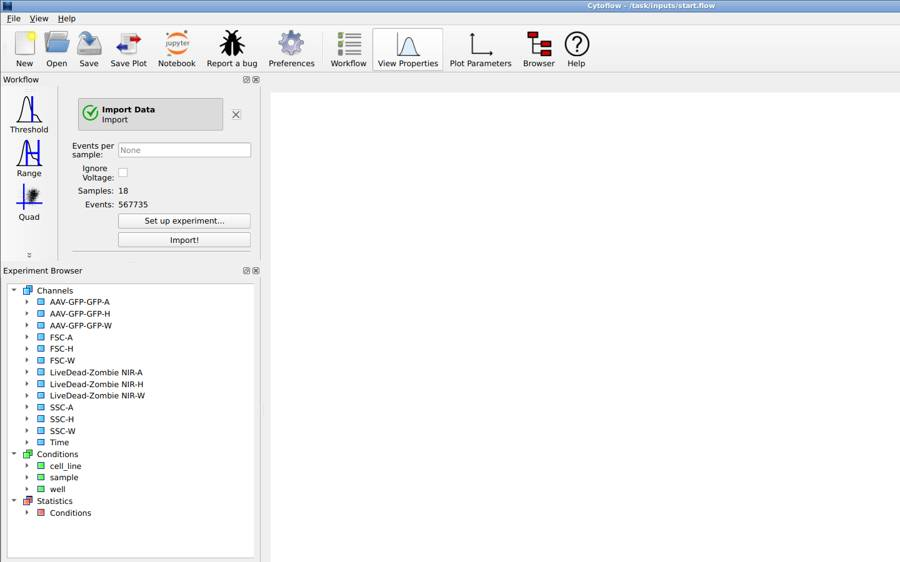
cd /task; cat /usr/local/bin/cu; cu click 43 483; sleep 1; cu click 43 596; sleep 1; cu screenshot /tmp/screen.png
{
"file_path": "/tmp/screen.png"
}#!/bin/bash
# Computer-use helper: the agent's only way to act on the screen.
# cu screenshot [path] -> PNG of the screen (default /tmp/screen.png); prints path
# cu click X Y [left|right|double]
# cu move X Y | cu drag X1 Y1 X2 Y2 | cu scroll X Y up|down [N]
# cu type "text" (keystrokes) | cu paste "text" (clipboard) | cu key KEYS (e.g. ctrl+s, Return)
# cu cursor -> current mouse position
export DISPLAY=${DISPLAY:-:1}
cmd=$1; shift
case "$cmd" in
screenshot) out=${1:-/tmp/screen.png}; scrot -o "$out" && echo "$out" ;;
click) xdotool mousemove "$1" "$2"; case "${3:-left}" in
left) xdotool click 1;; right) xdotool click 3;; double) xdotool click --repeat 2 1;; esac ;;
move) xdotool mousemove "$1" "$2" ;;
drag) xdotool mousemove "$1" "$2" mousedown 1 mousemove --sync "$3" "$4" mouseup 1 ;;
scroll) xdotool mousemove "$1" "$2"; b=$([ "$3" = up ] && echo 4 || echo 5); xdotool click --repeat "${4:-3}" $b ;;
type) xdotool type --delay 50 -- "$1" ;;
# paste: put text on the clipboard (detached owner process so it survives this command) then ctrl+v
# paste: own the clipboard (no -loops: Qt asks for TARGETS first, then the text), press ctrl+v,
# give Qt a moment to fetch it, then release. Robust both locally and on Modal.
paste) printf '%s' "$1" | xclip -quiet -selection clipboard -i >/dev/null 2>&1 & cp=$!
sleep 0.3; xdotool key ctrl+v; sleep 1; kill $cp 2>/dev/null; true ;;
key) xdotool key -- "$1" ;;
cursor) xdotool getmouselocation ;;
*) sed -n '2,9p' "$0"; exit 1 ;;
esac
/tmp/screen.png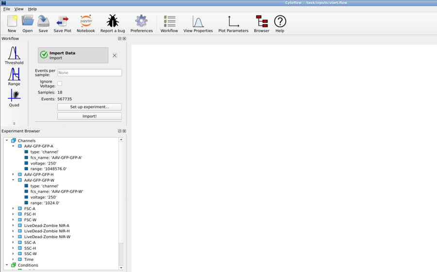
cd /task; export DISPLAY=:1; xdotool search --name "Cytoflow" | while read w; do xdotool getwindowname $w; xdotool getwindowgeometry $w; done; xdotool getdisplaygeometry; cu click 43 746; sleep 1; cu screenshot /tmp/screen.png
{
"file_path": "/tmp/screen.png"
}Qt Selection Owner for cytoflow Window 14680068 Position: 0,0 (screen: 0) Geometry: 3x3 cytoflow Window 14680072 Position: 0,0 (screen: 0) Geometry: 1x1 Cytoflow - /task/inputs/start.flow Window 14680070 Position: 2,40 (screen: 0) Geometry: 2082x1171 1440 900 /tmp/screen.png
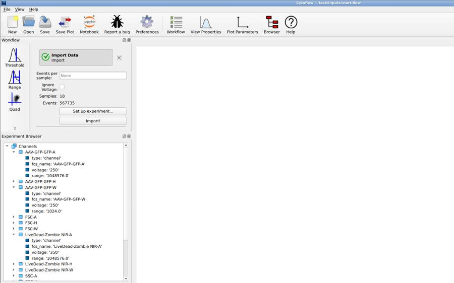
cd /task; export DISPLAY=:1; cu click 700 9 double; sleep 2; xdotool getwindowgeometry 14680070; cu screenshot /tmp/screen.png
{
"file_path": "/tmp/screen.png"
}Window 14680070 Position: 0,38 (screen: 0) Geometry: 1440x881 /tmp/screen.png
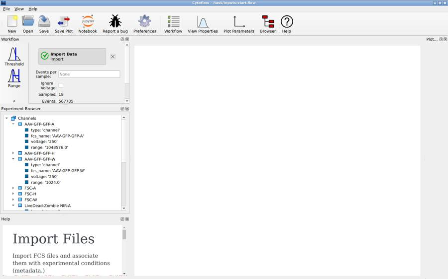
cd /task; cu click 408 706; sleep 1; cu click 651 75; sleep 2; cu screenshot /tmp/screen.png
{
"file_path": "/tmp/screen.png"
}/tmp/screen.png
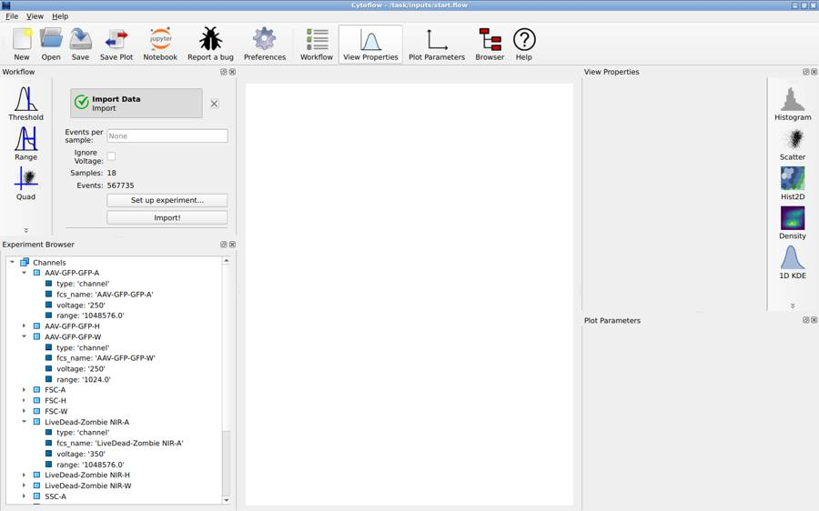
cd /task; cu drag 208 417 208 800; sleep 1; cu click 1393 390; sleep 3; cu screenshot /tmp/screen.png
{
"file_path": "/tmp/screen.png"
}/tmp/screen.png
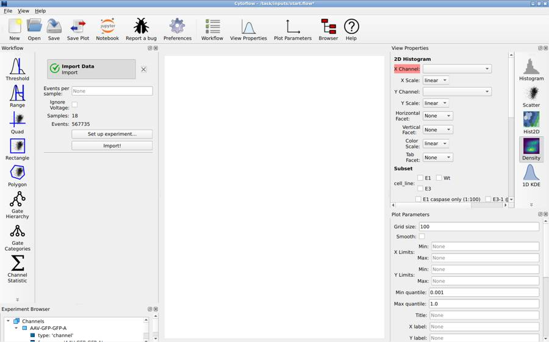
cd /task; cu click 1198 181; sleep 1; cu screenshot /tmp/screen.png
{
"file_path": "/tmp/screen.png"
}/tmp/screen.png
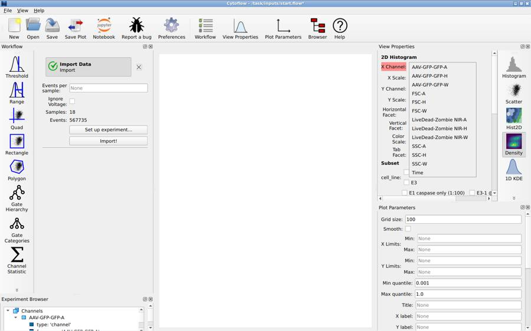
cd /task; cu click 1135 254; sleep 1; cu click 1198 241; sleep 1; cu click 1135 458; sleep 6; cu screenshot /tmp/screen.png
{
"file_path": "/tmp/screen.png"
}/tmp/screen.png
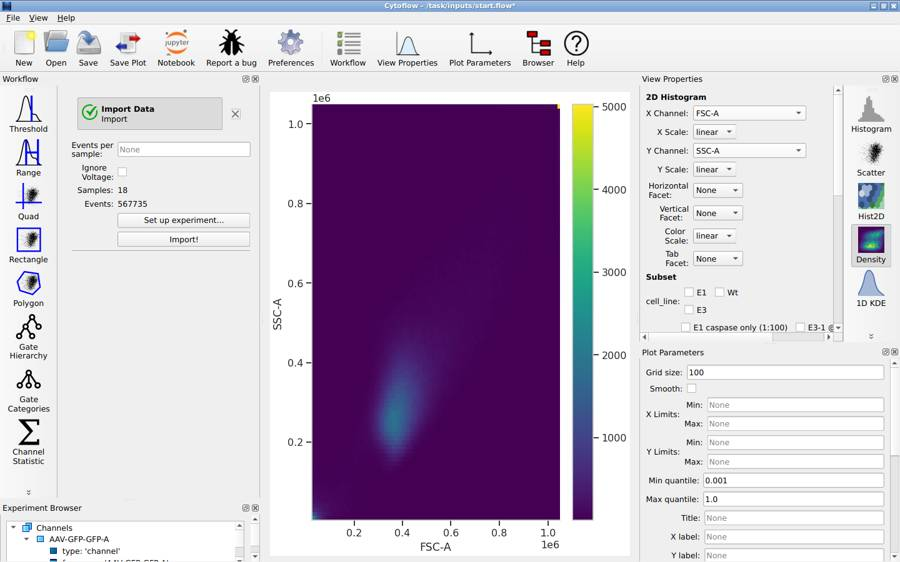
cd /task; cu click 1142 378; sleep 1; cu screenshot /tmp/s1.png;
{
"file_path": "/tmp/s1.png"
}/tmp/s1.png
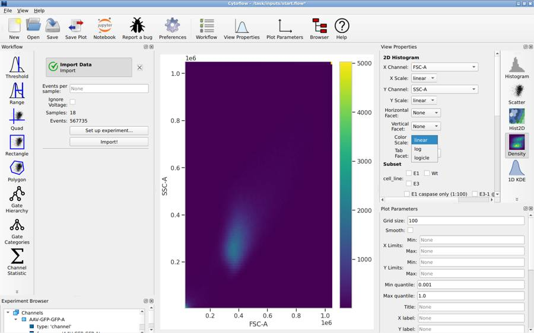
cd /task; cu click 1127 402; sleep 6; cu screenshot /tmp/s1.png;
{
"file_path": "/tmp/s1.png"
}/tmp/s1.png
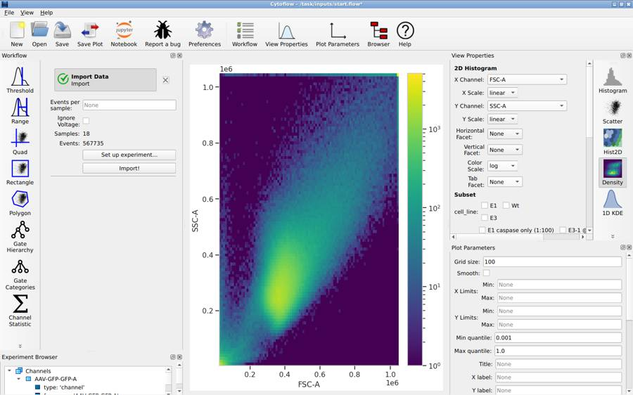
cd /task; cu click 1147 305; sleep 1; cu screenshot /tmp/s1.png;
{
"file_path": "/tmp/s1.png"
}/tmp/s1.png
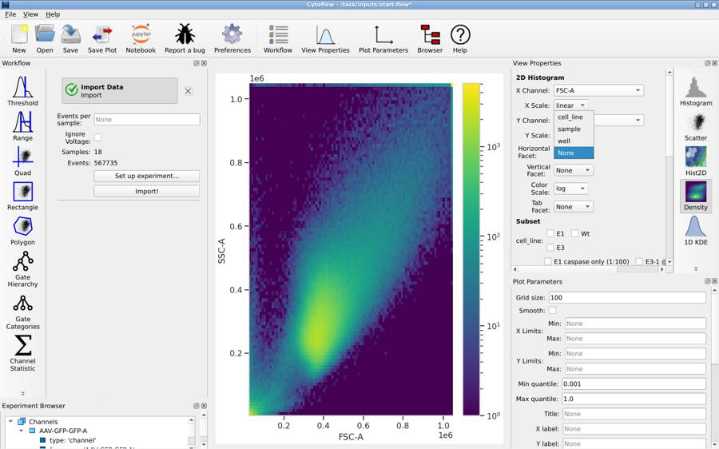
cd /task; cu click 1142 235; sleep 8; cu screenshot /tmp/s1.png;
{
"file_path": "/tmp/s1.png"
}/tmp/s1.png
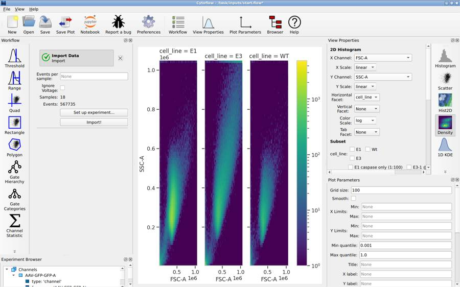
cd /task; cu click 45 460; sleep 3; cu screenshot /tmp/s1.png;
{
"file_path": "/tmp/s1.png"
}/tmp/s1.png
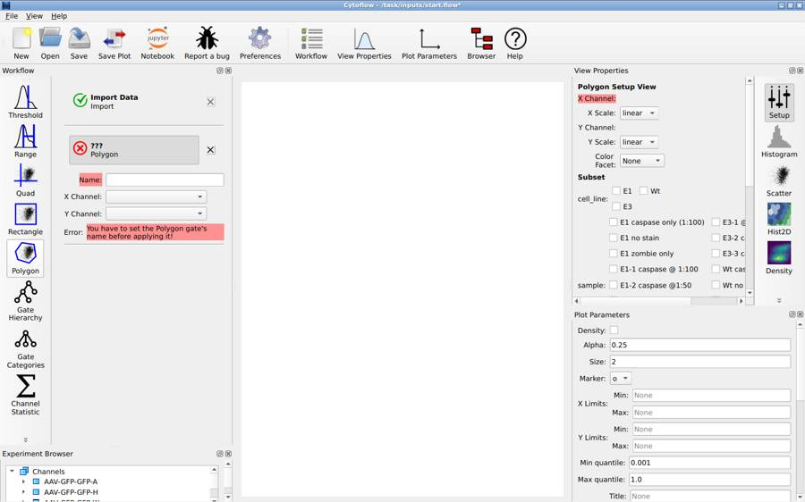
cd /task; cu click 294 322; cu type "cells"; cu key Return; sleep 1; cu click 278 353; sleep 1; cu screenshot /tmp/s1.png;
{
"file_path": "/tmp/s1.png"
}/tmp/s1.png
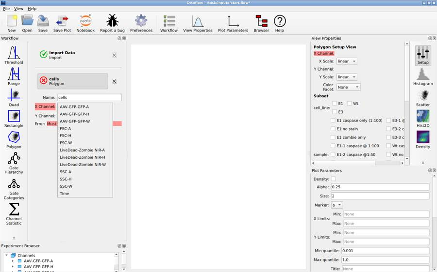
cd /task; cu click 215 425; sleep 1; cu click 278 383; sleep 1; cu click 215 598; sleep 1; cu click 1098 592; sleep 10; cu screenshot /tmp/s1.png;
{
"file_path": "/tmp/s1.png"
}/tmp/s1.png
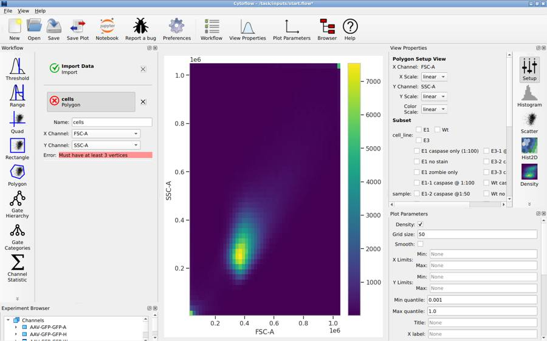
cd /task; cu click 1142 289; sleep 1; cu click 1127 313; sleep 8; cu screenshot /tmp/s1.png;
{
"file_path": "/tmp/s1.png"
}/tmp/s1.png
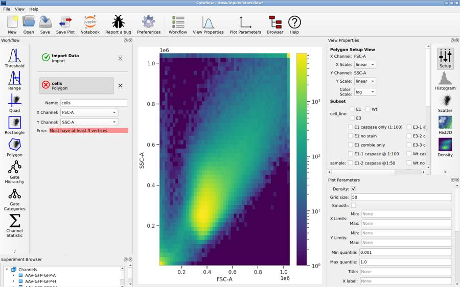
cd /task; for p in "577 810" "549 759" "561 549" "657 199" "888 199" "888 517"; do cu click $p; sleep 0.7; done; cu click 689 810 double; sleep 8; cu screenshot /tmp/s1.png;
{
"file_path": "/tmp/s1.png"
}/tmp/s1.png
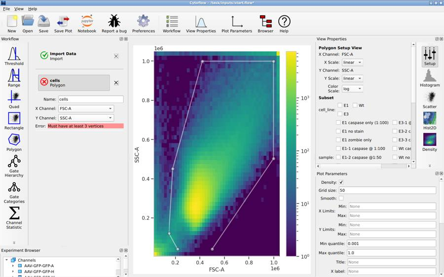
cd /task; cu click 577 810; sleep 8; cu screenshot /tmp/s1.png;
{
"file_path": "/tmp/s1.png"
}/tmp/s1.png
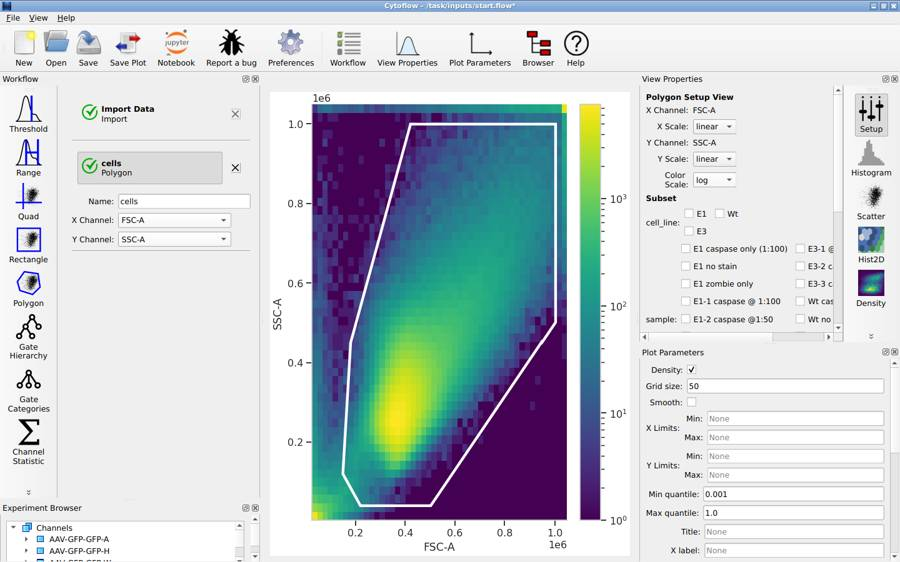
cd /task; cu click 20 29; sleep 1; cu screenshot /tmp/s1.png;
{
"file_path": "/tmp/s1.png"
}/tmp/s1.png
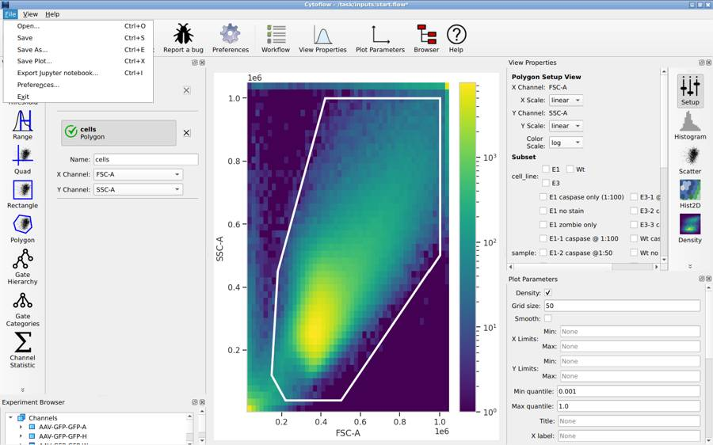
cd /task; cu click 65 100; sleep 2; cu screenshot /tmp/s1.png;
{
"file_path": "/tmp/s1.png"
}/tmp/s1.png
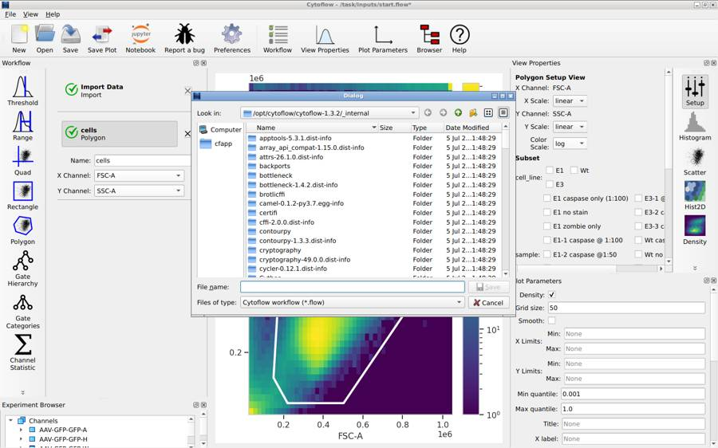
cd /task; cu click 706 576; cu paste "/task/outputs/workflow.flow"; sleep 0.5; cu key Return; sleep 3; cu screenshot /tmp/s1.png; ls -la outputs; grep -n -A30 "polygon" outputs/workflow.flow | head -60
{
"file_path": "/tmp/s1.png"
}/tmp/s1.png total 32 drwxrwsrwx 2 agent task 4096 Nov 10 19:18 . drwxr-xr-x 4 root root 4096 Nov 5 22:08 .. -rw-rw-r-- 1 cfapp task 20991 Nov 10 19:18 workflow.flow 691: current_view: &id005 !polygon-view;3 692- current_plot: null 693- huefacet: '' 694- huescale: log 695: op: &id004 !polygon;1 696- name: cells 697- vertices: 698- - !!python/tuple 699- - 220154.74392020685 700- - 40564.55912778409 701- - !!python/tuple 702- - 149493.24404528458 703- - 120599.27069499395 704- - !!python/tuple 705- - 180898.35510080558 706- - 450538.2857271653 707- - !!python/tuple 708- - 421670.8731931334 709- - 999347.7364737472 710- - !!python/tuple 711- - 1002665.4277202721 712- - 999347.7364737472 713- - !!python/tuple 714- - 1002665.4277202721 715- - 501172.4910043797 716- - !!python/tuple 717- - 502800.743419896 718- - 40564.55912778409 719- - !!python/tuple 720- - 502800.743419896 721- - 40564.55912778409 722- xchannel: FSC-A 723- xscale: linear 724- ychannel: SSC-A 725- yscale: linear 726: plot_params: !polygon-params;1 727- alpha: 0.25 728- col_wrap: null 729- density: true 730- despine: true 731- gridsize: 50 732- huelabel: '' 733- legend: true 734- marker: o 735- max_quantile: 1.0 736- min_quantile: 0.001 737- s: 2 738- sharex: true 739- sharey: true 740- smoothed: false 741- smoothed_sigma: 1.0 742- sns_context: notebook 743- sns_style: whitegrid 744- title: '' 745- xlabel: '' 746- xlim: *id002 747- ylabel: '' 748- ylim: *id003 749- subset_list: 750- - !category-subset;1
cd /task; cu click 45 460; sleep 3; cu screenshot /tmp/s1.png;
{
"file_path": "/tmp/s1.png"
}/tmp/s1.png
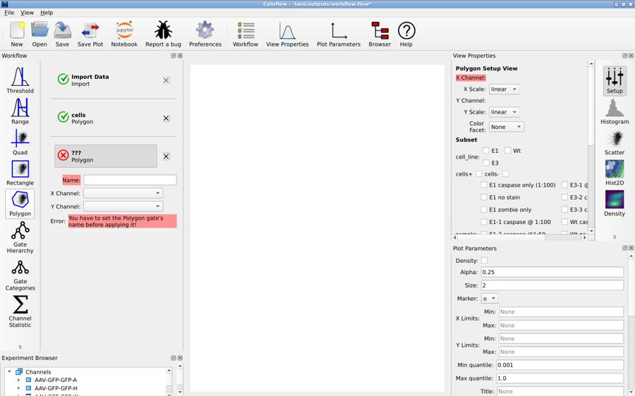
cd /task; cu click 294 409; cu type "singlets"; cu key Return; sleep 1; cu click 278 439; sleep 1; cu click 215 511; sleep 1; cu click 278 469; sleep 1; cu click 215 565; sleep 2; cu click 1086 395; sleep 2; cu click 1098 592; sleep 8; cu screenshot /tmp/s1.png;
{
"file_path": "/tmp/s1.png"
}/tmp/s1.png
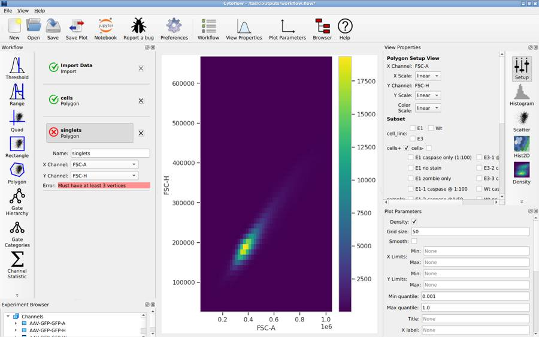
cd /task; cu click 1142 289; sleep 1; cu click 1127 313; sleep 8; cu screenshot /tmp/s1.png;
{
"file_path": "/tmp/s1.png"
}/tmp/s1.png
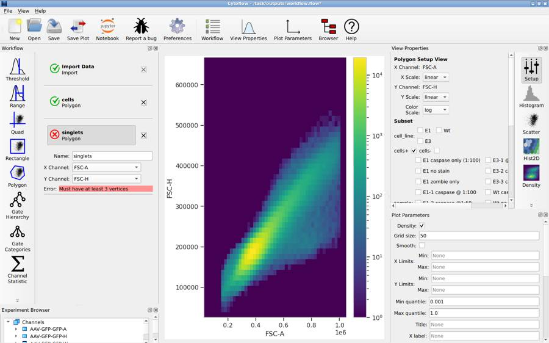
cd /task; for p in "569 828" "569 754" "898 201" "898 435" "569 828"; do cu click $p; sleep 0.8; done; sleep 8; cu screenshot /tmp/s1.png;
{
"file_path": "/tmp/s1.png"
}/tmp/s1.png
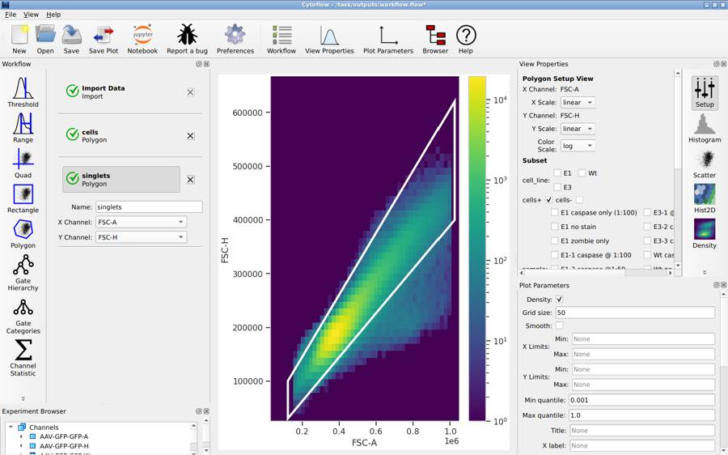
cd /task; cu key ctrl+s; sleep 2; cu click 1393 250; sleep 3; cu screenshot /tmp/s1.png;
{
"file_path": "/tmp/s1.png"
}/tmp/s1.png
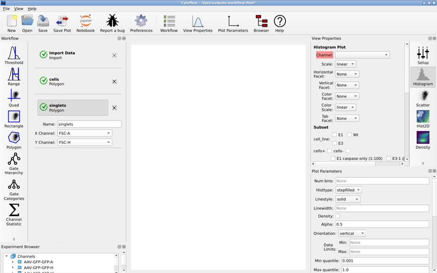
cd /task; cu drag 1232 549 1232 800; sleep 1; cu click 1190 181; sleep 1; cu click 1150 326; sleep 1; cu click 1137 212; sleep 1; cu screenshot /tmp/s1.png;
{
"file_path": "/tmp/s1.png"
}/tmp/s1.png
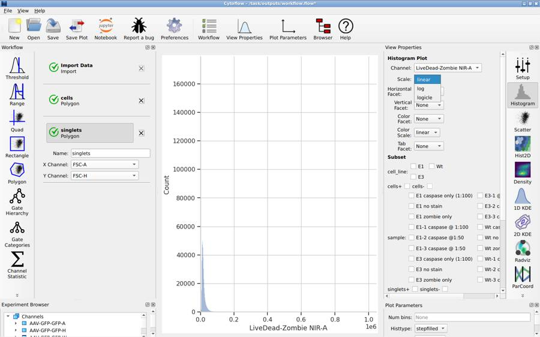
cd /task; cu click 1132 260; sleep 2; cu click 1143 317; sleep 1; cu click 1135 270; sleep 2; cu click 1086 497; sleep 1; cu click 1107 772; sleep 1; cu click 1102 444; sleep 8; cu screenshot /tmp/s1.png;
{
"file_path": "/tmp/s1.png"
}/tmp/s1.png
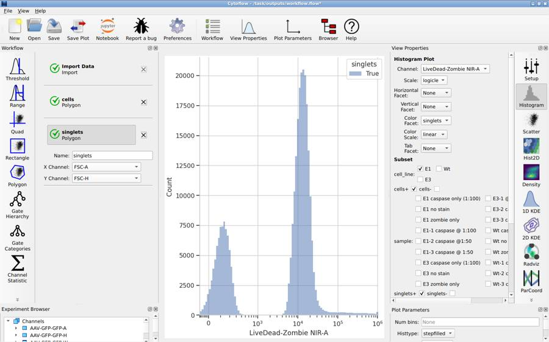
cd /task; cu click 1143 317; sleep 1; cu screenshot /tmp/s1.png;
{
"file_path": "/tmp/s1.png"
}/tmp/s1.png
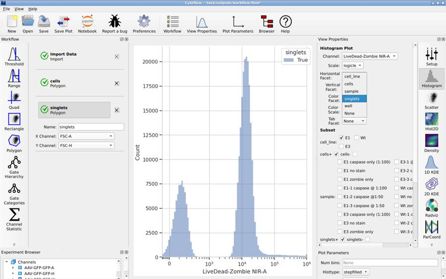
cd /task; cu click 1135 295; sleep 8; cu screenshot /tmp/s1.png;
{
"file_path": "/tmp/s1.png"
}/tmp/s1.png
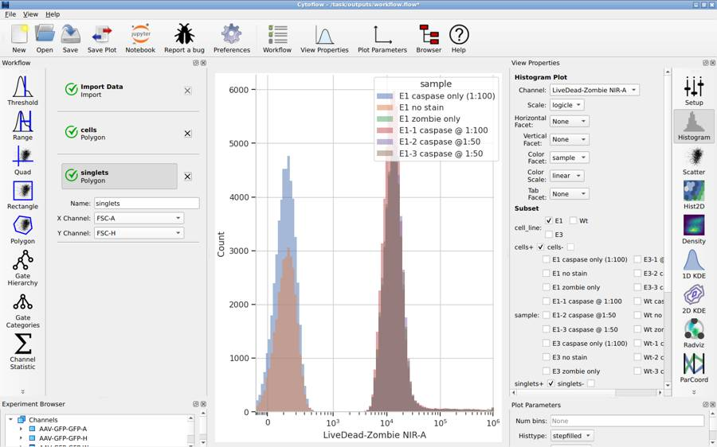
cd /task; cu click 1143 317; sleep 1; cu click 1130 388; sleep 3; cu click 1143 281; sleep 1; cu click 1135 210; sleep 10; cu screenshot /tmp/s1.png;
{
"file_path": "/tmp/s1.png"
}/tmp/s1.png
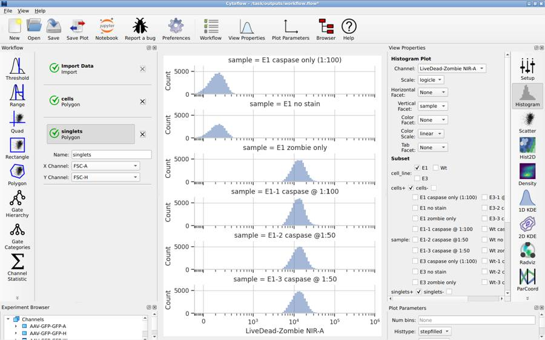
cd /task; cu click 1102 444; sleep 1; cu click 1102 472; sleep 10; cu screenshot /tmp/s1.png; cu click 1102 472; sleep 1; cu click 1151 444; sleep 10; cu screenshot /tmp/s2.png
{
"file_path": "/tmp/s1.png"
}{
"file_path": "/tmp/s2.png"
}/tmp/s1.png /tmp/s2.png
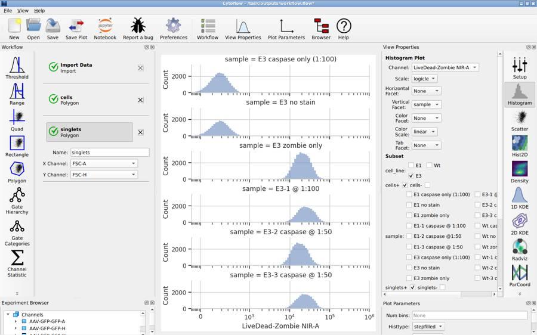
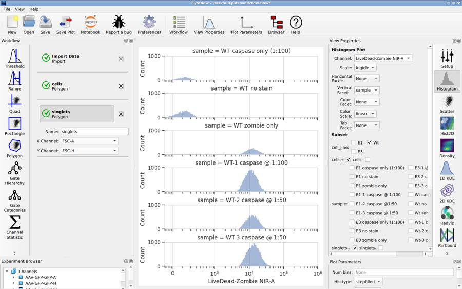
cd /task; cu click 1190 181; sleep 1; cu screenshot /tmp/s1.png;
{
"file_path": "/tmp/s1.png"
}/tmp/s1.png
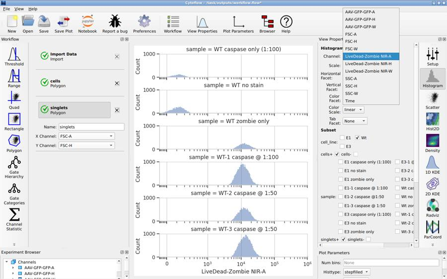
cd /task; cu click 1160 38; sleep 10; cu screenshot /tmp/s2.png; cu click 1151 444; sleep 1; cu click 1102 444; sleep 10; cu screenshot /tmp/s1.png; cu click 1102 444; sleep 1; cu click 1102 472; sleep 10; cu screenshot /tmp/s3.png
{
"file_path": "/tmp/s2.png"
}{
"file_path": "/tmp/s1.png"
}{
"file_path": "/tmp/s3.png"
}/tmp/s2.png /tmp/s1.png /tmp/s3.png
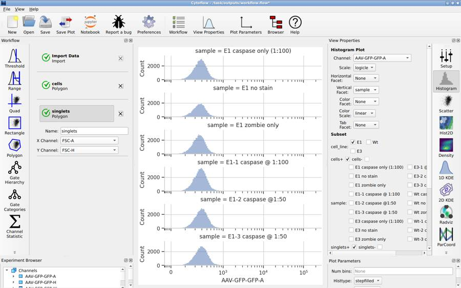
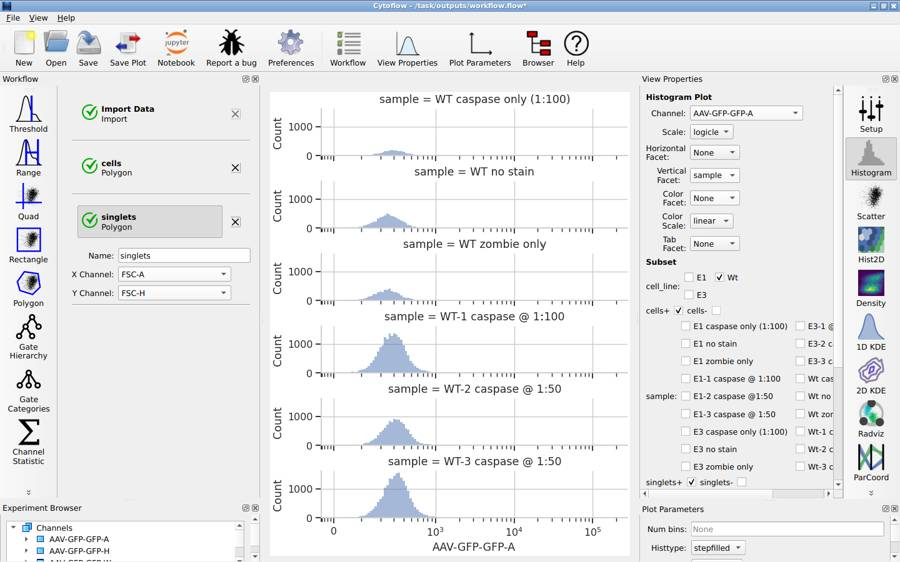
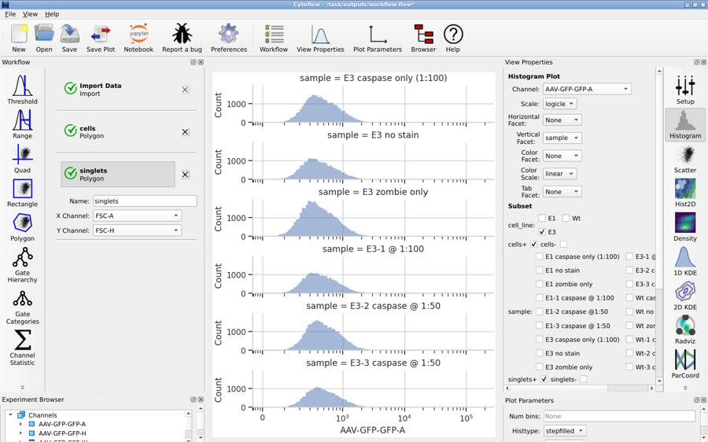
cd /task; cu click 1393 460; sleep 3; cu screenshot /tmp/s1.png
{
"file_path": "/tmp/s1.png"
}/tmp/s1.png
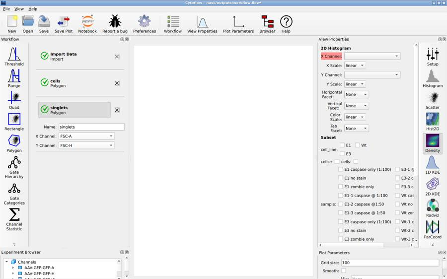
thinking
The BL1 caspase histograms look identical across unstained, FMO and fully stained wells, so I'm checking the tails in a 2D plot of caspase against Zombie before placing the live and caspase+ gates.
cd /task; cu click 1198 181; sleep 1; cu click 1160 182; sleep 1; cu click 1142 212; sleep 1; cu click 1132 260; sleep 1; cu click 1198 241; sleep 1; cu click 1190 386; sleep 1; cu click 1142 271; sleep 1; cu click 1132 319; sleep 1; cu click 1142 378; sleep 1; cu click 1127 402; sleep 1; cu click 1086 521; sleep 1; cu click 1102 496; sleep 1; cu click 1147 342; sleep 1; cu click 1135 271; sleep 12; cu screenshot /tmp/s1.png
{
"file_path": "/tmp/s1.png"
}/tmp/s1.png
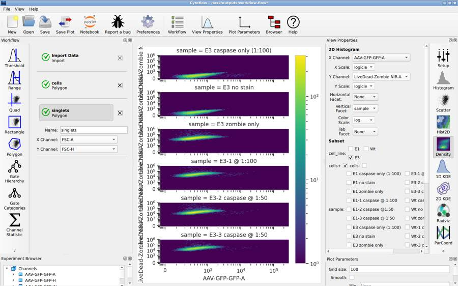
cd /task; date; cu click 1147 342; sleep 1; cu click 1135 413; sleep 2; cu click 1102 496; sleep 1; cu click 1147 305; sleep 1; cu click 1142 235; sleep 12; cu screenshot /tmp/s1.png
{
"file_path": "/tmp/s1.png"
}Tue Nov 10 19:24:11 UTC 2026 /tmp/s1.png
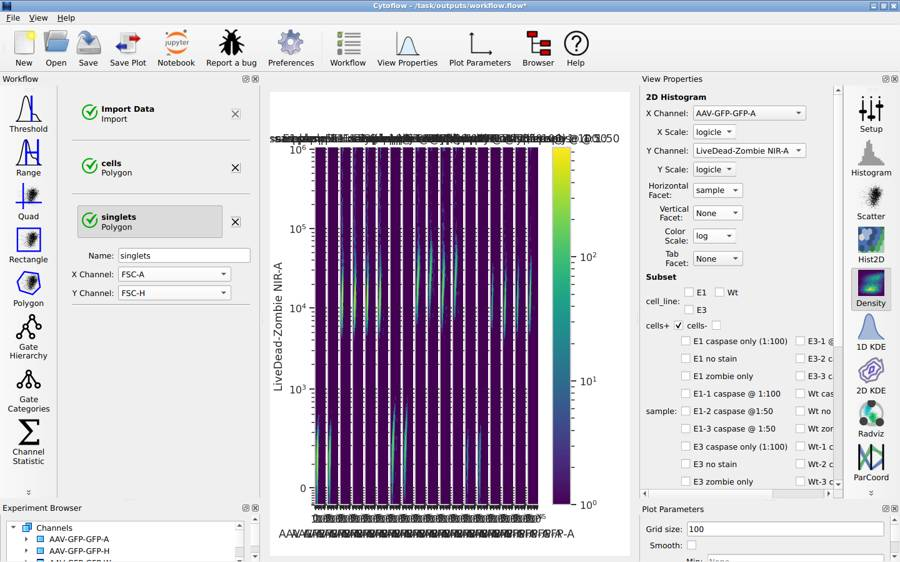
cd /task; cu click 1147 305; sleep 1; cu click 1142 258; sleep 12; cu screenshot /tmp/s1.png
{
"file_path": "/tmp/s1.png"
}/tmp/s1.png
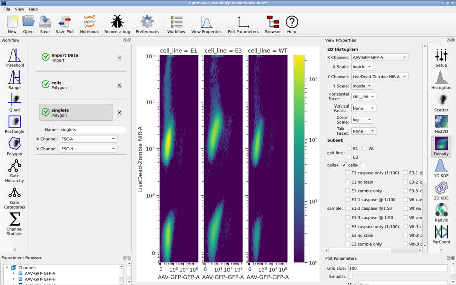
cd /task; cu click 45 250; sleep 3; cu screenshot /tmp/s1.png
{
"file_path": "/tmp/s1.png"
}/tmp/s1.png
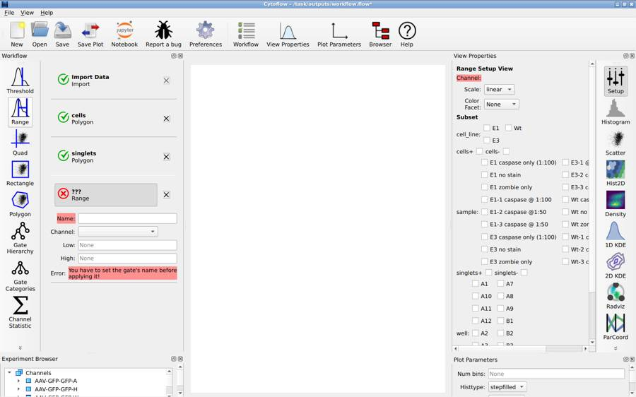
cd /task; cu click 288 495; cu type "live"; cu key Return; sleep 1; cu click 266 525; sleep 1; cu click 250 669; sleep 2; cu click 288 556; cu type "-1000000"; cu key Return; sleep 1; cu click 288 586; cu type "100000"; cu key Return; sleep 2; cu click 1128 203; sleep 1; cu click 1124 251; sleep 2; cu click 1086 343; sleep 1; cu click 1107 618; sleep 10; cu screenshot /tmp/s1.png
{
"file_path": "/tmp/s1.png"
}/tmp/s1.png
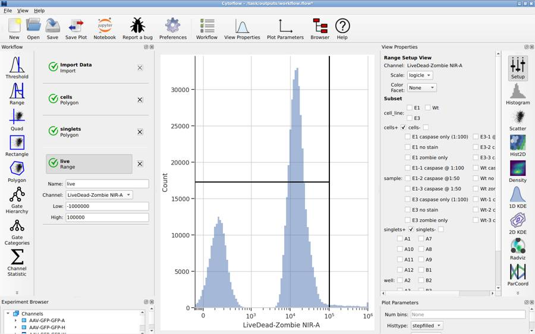
cd /task; cu click 45 250; sleep 3; cu screenshot /tmp/s1.png
{
"file_path": "/tmp/s1.png"
}/tmp/s1.png
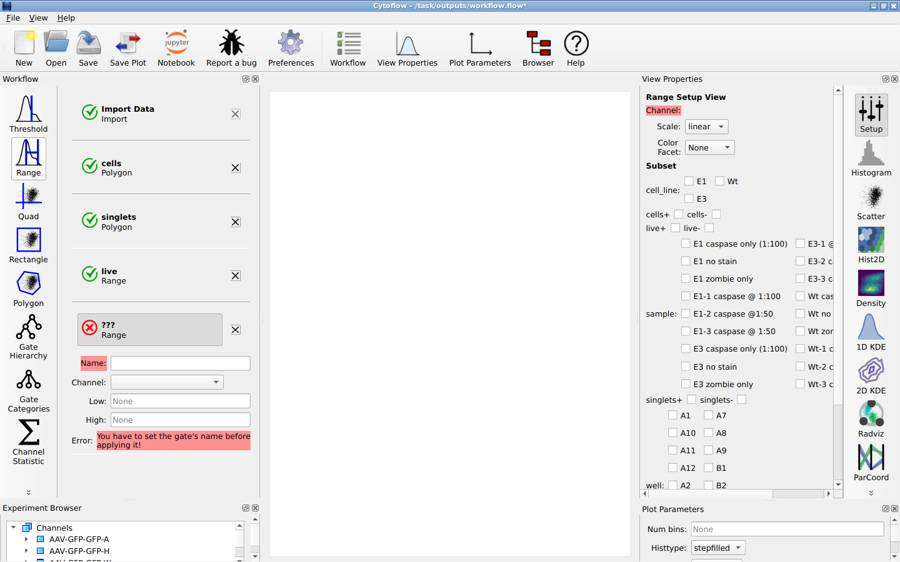
cd /task; cu click 288 582; cu type "casp3_pos"; cu key Return; sleep 1; cu click 266 612; sleep 1; cu click 250 613; sleep 2; cu click 288 643; cu type "5000"; cu key Return; sleep 1; cu click 288 673; cu type "2000000"; cu key Return; sleep 2; cu click 1128 203; sleep 1; cu click 1124 251; sleep 2; cu click 1086 343; sleep 1; cu click 1080 365; sleep 1; cu click 1107 640; sleep 10; cu screenshot /tmp/s1.png
{
"file_path": "/tmp/s1.png"
}/tmp/s1.png
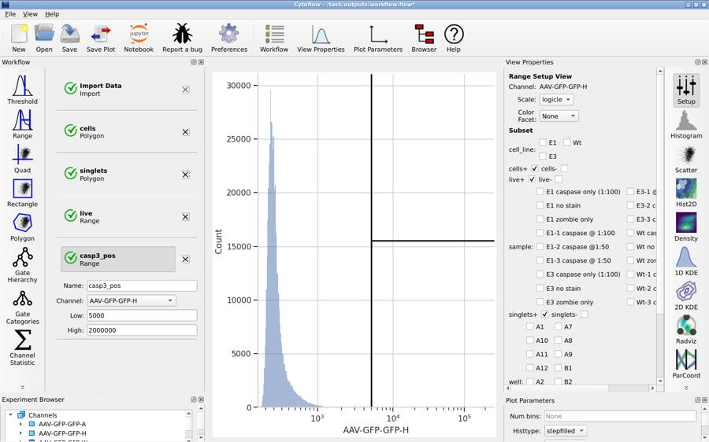
cd /task; cu click 266 612; sleep 1; cu screenshot /tmp/s2.png
{
"file_path": "/tmp/s2.png"
}/tmp/s2.png
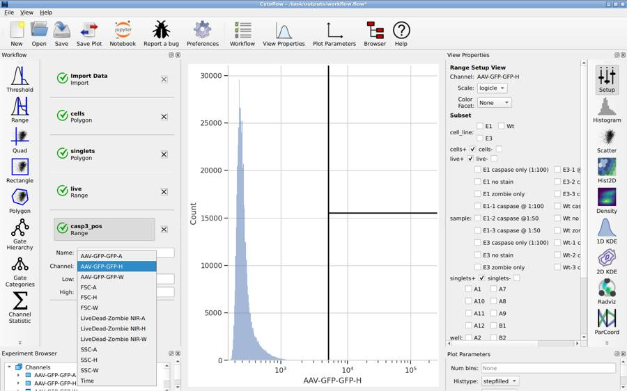
cd /task; cu click 235 589; sleep 10; cu screenshot /tmp/s2.png
{
"file_path": "/tmp/s2.png"
}/tmp/s2.png
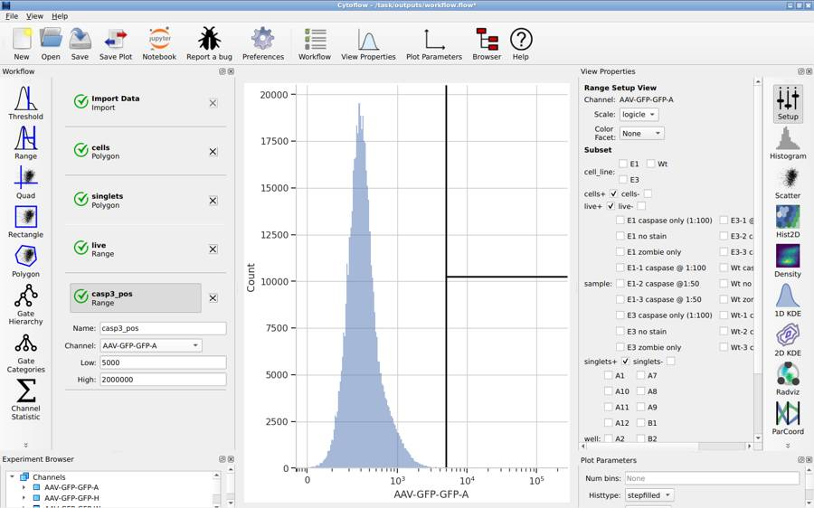
cd /task; cu key ctrl+s; sleep 2; cu click 45 700; sleep 3; cu screenshot /tmp/s2.png
{
"file_path": "/tmp/s2.png"
}/tmp/s2.png
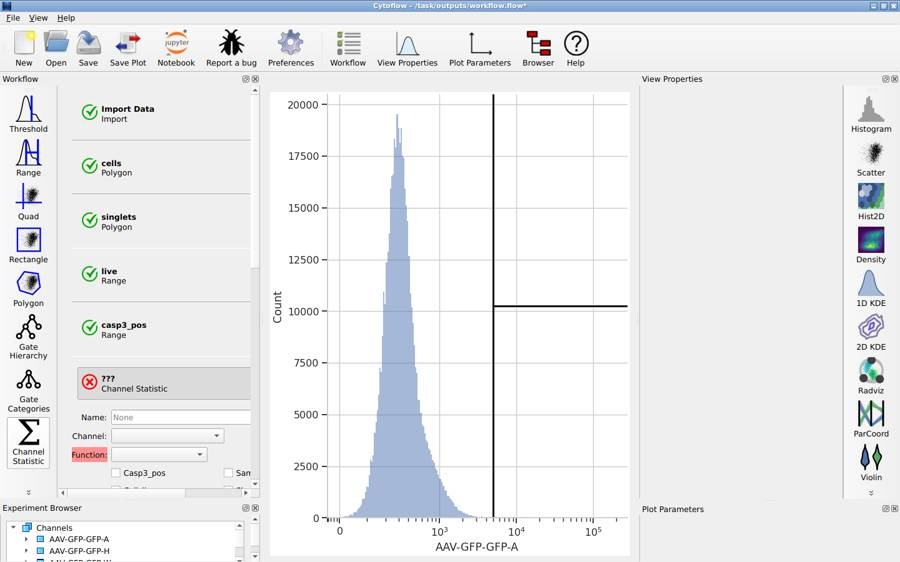
cd /task; cu click 408 813; sleep 2; cu scroll 250 600 down 10; sleep 2; cu screenshot /tmp/s2.png
{
"file_path": "/tmp/s2.png"
}/tmp/s2.png
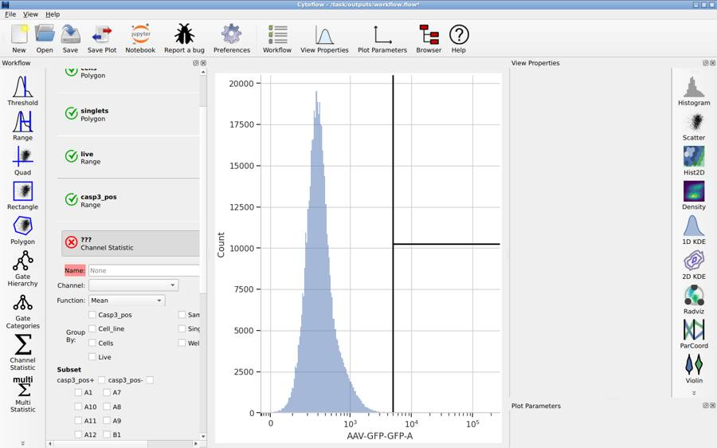
cd /task; cu drag 421 510 600 510; sleep 2; cu screenshot /tmp/s2.png
{
"file_path": "/tmp/s2.png"
}/tmp/s2.png
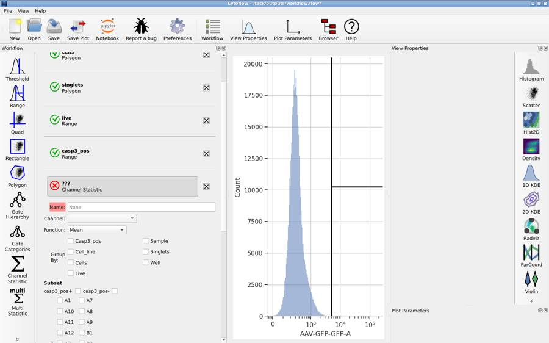
cd /task; cu click 370 543; cu type "counts"; cu key Return; sleep 1; cu click 266 573; sleep 1; cu click 250 645; sleep 2; cu click 254 603; sleep 1; cu screenshot /tmp/s2.png
{
"file_path": "/tmp/s2.png"
}/tmp/s2.png
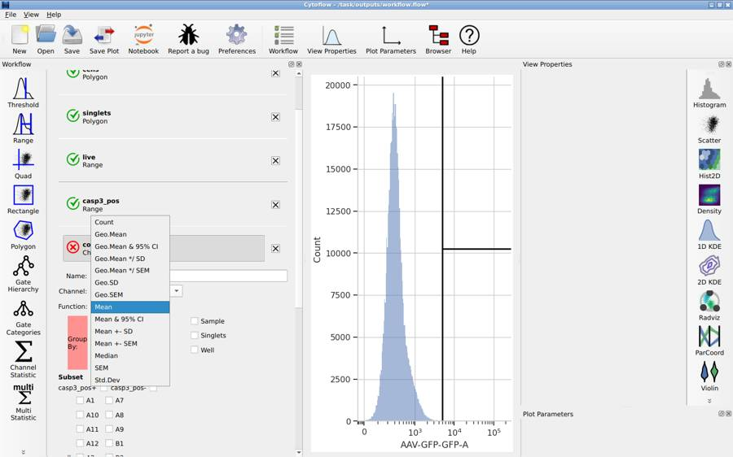
cd /task; cu click 205 438; sleep 2; cu click 382 689; sleep 1; cu click 185 689; sleep 1; cu click 382 660; sleep 1; cu click 185 717; sleep 1; cu click 185 632; sleep 8; cu screenshot /tmp/s2.png
{
"file_path": "/tmp/s2.png"
}/tmp/s2.png
cd /task; cu click 1393 789; sleep 2; cu screenshot /tmp/s2.png
{
"file_path": "/tmp/s2.png"
}/tmp/s2.png
cd /task; cu click 1399 605; sleep 4; cu screenshot /tmp/s2.png
{
"file_path": "/tmp/s2.png"
}/tmp/s2.png
cd /task; cu click 1142 181; sleep 1; cu screenshot /tmp/s2.png
{
"file_path": "/tmp/s2.png"
}/tmp/s2.png
cd /task; cu click 1124 207; sleep 6; cu screenshot /tmp/s2.png
{
"file_path": "/tmp/s2.png"
}/tmp/s2.png
cd /task; mkdir -p outputs/cytoflow_exports && chmod 777 outputs/cytoflow_exports; cu click 1142 211; sleep 2; cu screenshot /tmp/s2.png
{
"file_path": "/tmp/s2.png"
}/tmp/s2.png
cd /task; cu click 706 567; cu paste "/task/outputs/cytoflow_exports/counts_v1.csv"; sleep 0.5; cu key Return; sleep 3; cu screenshot /tmp/s2.png; ls -la outputs/cytoflow_exports; head -20 outputs/cytoflow_exports/counts_v1.csv; wc -l outputs/cytoflow_exports/counts_v1.csv
/tmp/s2.png total 12 drwxrwsrwx 2 root task 4096 Nov 10 19:28 . drwxrwsrwx 3 agent task 4096 Nov 10 19:28 .. -rw-rw-r-- 1 cfapp task 3200 Nov 10 19:28 counts_v1.csv well,cells,singlets,live,casp3_pos,FSC-A A1,0,0,1,0,561.0 A1,0,1,1,0,30.0 A1,1,0,1,0,104.0 A1,1,1,1,0,6274.0 A10,0,0,0,0,157.0 A10,0,0,0,1,2.0 A10,0,0,1,0,1449.0 A10,0,0,1,1,2.0 A10,0,1,0,0,123.0 A10,0,1,1,0,168.0 A10,0,1,1,1,1.0 A10,1,0,0,0,78.0 A10,1,0,1,0,943.0 A10,1,0,1,1,9.0 A10,1,1,0,0,1095.0 A10,1,1,1,0,54863.0 A10,1,1,1,1,46.0 A11,0,0,0,0,165.0 A11,0,0,0,1,2.0 190 outputs/cytoflow_exports/counts_v1.csv
mkdir -p /task/work && cat > /task/work/tab.py <<'EOF'
import pandas as pd, sys
f = sys.argv[1]
d = pd.read_csv(f)
d = d.rename(columns={d.columns[-1]:'n'})
lay = pd.read_csv('/task/inputs/plate_layout.csv')
rows=[]
for w,g in d.groupby('well'):
al = g.n.sum()
c = g[g.cells==1].n.sum()
s = g[(g.cells==1)&(g.singlets==1)].n.sum()
l = g[(g.cells==1)&(g.singlets==1)&(g.live==1)].n.sum()
p = g[(g.cells==1)&(g.singlets==1)&(g.live==1)&(g.casp3_pos==1)].n.sum()
ps = g[(g.cells==1)&(g.singlets==1)&(g.casp3_pos==1)].n.sum()
rows.append(dict(well=w,all=int(al),cells=int(c),singlets=int(s),live=int(l),pos=int(p),
pc_cells=100*c/al,pc_sing=100*s/c,pc_live=100*l/s,pc_pos=100*p/l if l else float('nan'), pos_in_singlets=int(ps)))
r = pd.DataFrame(rows).merge(lay[['well','sample','cell_line']],on='well')
r['o']=r.well.map(lambda w:(w[0],int(w[1:])))
r=r.sort_values('o').drop(columns='o')
pd.set_option('display.width',250)
print(r.round(3).to_string(index=False))
print(r['all'].sum())
EOF
python3 /task/work/tab.py /task/outputs/cytoflow_exports/counts_v1.csvwell all cells singlets live pos pc_cells pc_sing pc_live pc_pos pos_in_singlets sample cell_line A1 6969 6378 6274 6274 0 91.520 98.369 100.000 0.000 0 WT no stain WT A2 3149 2552 2505 2505 9 81.042 98.158 100.000 0.359 9 WT caspase only (1:100) WT A3 5742 5176 5094 5036 0 90.143 98.416 98.861 0.000 0 WT zombie only WT A4 20776 19749 19278 19074 47 95.057 97.615 98.942 0.246 47 WT-1 caspase @ 1:100 WT A5 13119 12608 12351 12255 44 96.105 97.962 99.223 0.359 44 WT-2 caspase @ 1:50 WT A6 21946 21077 20667 20352 81 96.040 98.055 98.476 0.398 81 WT-3 caspase @ 1:50 WT A7 33911 32604 32183 32183 0 96.146 98.709 100.000 0.000 0 E1 no stain E1 A8 52749 51169 50274 50274 43 97.005 98.251 100.000 0.086 43 E1 caspase only (1:100) E1 A9 49297 47564 46844 45930 0 96.485 98.486 98.049 0.000 0 E1 zombie only E1 A10 58936 57034 56004 54909 46 96.773 98.194 98.045 0.084 46 E1-1 caspase @ 1:100 E1 A11 51193 49211 48367 47452 51 96.128 98.285 98.108 0.107 51 E1-2 caspase @1:50 E1 A12 51047 48699 47935 46708 73 95.400 98.431 97.440 0.156 73 E1-3 caspase @ 1:50 E1 B1 26935 23254 22611 22611 2 86.334 97.235 100.000 0.009 2 E3 no stain E3 B2 36048 31523 30660 30660 218 87.447 97.262 100.000 0.711 218 E3 caspase only (1:100) E3 B3 46022 40336 39138 38531 6 87.645 97.030 98.449 0.016 6 E3 zombie only E3 B4 27503 24039 23344 22911 153 87.405 97.109 98.145 0.668 156 E3-1 @ 1:100 E3 B5 37596 33650 32729 32171 176 89.504 97.263 98.295 0.547 178 E3-2 caspase @ 1:50 E3 B6 24797 22071 21492 21082 113 89.007 97.377 98.092 0.536 114 E3-3 caspase @ 1:50 E3 567735
cd /task; cu key Escape; cu click 1393 180; sleep 3; cu screenshot /tmp/s2.png
{
"file_path": "/tmp/s2.png"
}/tmp/s2.png
cd /task; cu click 1190 181; sleep 1; cu click 1150 470; sleep 2; cu click 1150 281; sleep 1; cu screenshot /tmp/s3.png; cu click 1135 210; sleep 2; cu click 1102 466; sleep 10; cu screenshot /tmp/s2.png
{
"file_path": "/tmp/s2.png"
}/tmp/s3.png /tmp/s2.png
cd /task; cu click 1102 466; sleep 1; cu click 1102 494; sleep 10; cu screenshot /tmp/s2.png; cu click 1102 494; sleep 1; cu click 1151 466; sleep 10; cu screenshot /tmp/s3.png
{
"file_path": "/tmp/s2.png"
}{
"file_path": "/tmp/s3.png"
}/tmp/s2.png /tmp/s3.png
cd /task; cu click 1393 250; sleep 3; cu click 1198 181; sleep 1; cu click 1160 182; sleep 1; cu click 1142 212; sleep 1; cu click 1132 260; sleep 1; cu click 1198 241; sleep 1; cu click 1190 458; sleep 1; cu screenshot /tmp/s2.png
{
"file_path": "/tmp/s2.png"
}/tmp/s2.png
cd /task; cu click 1166 212; sleep 1; cu click 1160 260; sleep 2; cu click 1086 609; sleep 1; cu click 1080 631; sleep 1; cu click 1102 584; sleep 1; cu click 1180 408; sleep 1; cu click 1160 337; sleep 12; cu screenshot /tmp/s2.png
{
"file_path": "/tmp/s2.png"
}/tmp/s2.png
cd /task; date; cu click 45 700; sleep 3; cu scroll 340 600 down 15; sleep 2; cu screenshot /tmp/s2.png
{
"file_path": "/tmp/s2.png"
}Tue Nov 10 19:31:09 UTC 2026 /tmp/s2.png
cd /task; cu click 370 567; cu type "med_bl1"; cu key Return; sleep 1; cu click 266 597; sleep 1; cu screenshot /tmp/s2.png
{
"file_path": "/tmp/s2.png"
}/tmp/s2.png
cd /task; cu click 235 311; sleep 2; cu click 254 627; sleep 1; cu screenshot /tmp/s2.png
{
"file_path": "/tmp/s2.png"
}/tmp/s2.png
cd /task; cu click 208 840; sleep 2; cu click 382 713; sleep 1; cu click 185 657; sleep 2; cu scroll 125 720 down 15; sleep 2; cu screenshot /tmp/s2.png
{
"file_path": "/tmp/s2.png"
}/tmp/s2.png
cd /task; cu click 167 575; sleep 1; cu click 161 597; sleep 1; cu click 187 872; sleep 3; cu screenshot /tmp/s2.png
{
"file_path": "/tmp/s2.png"
}/tmp/s2.png
cd /task; cu click 45 700; sleep 3; cu screenshot /tmp/s2.png
{
"file_path": "/tmp/s2.png"
}/tmp/s2.png
cd /task; cu click 382 256; sleep 1; cu click 167 661; sleep 1; cu scroll 125 310 down 15; sleep 2; cu screenshot /tmp/s2.png
{
"file_path": "/tmp/s2.png"
}/tmp/s2.png
cd /task; cu click 187 850; sleep 1; cu click 185 175; sleep 1; cu scroll 125 420 up 3; sleep 2; cu screenshot /tmp/s2.png
{
"file_path": "/tmp/s2.png"
}/tmp/s2.png
cd /task; cu click 370 189; cu type "med_zombie"; cu key Return; sleep 1; cu click 266 219; sleep 1; cu click 250 363; sleep 2; cu click 254 249; sleep 1; cu screenshot /tmp/s3.png; cu click 208 513; sleep 3; cu screenshot /tmp/s2.png
{
"file_path": "/tmp/s2.png"
}/tmp/s3.png /tmp/s2.png
cd /task; cu click 45 700; sleep 3; cu screenshot /tmp/s2.png
{
"file_path": "/tmp/s2.png"
}/tmp/s2.png
cd /task; cu click 370 275; cu type "med_fsc"; cu key Return; sleep 1; cu click 266 305; sleep 1; cu click 250 377; sleep 2; cu click 254 336; sleep 1; cu click 208 600; sleep 2; cu click 382 421; sleep 1; cu click 167 827; sleep 1; cu scroll 125 480 down 15; sleep 2; cu screenshot /tmp/s2.png
{
"file_path": "/tmp/s2.png"
}/tmp/s2.png
cd /task; cu click 187 872; sleep 2; cu click 45 700; sleep 3; cu screenshot /tmp/s2.png
{
"file_path": "/tmp/s2.png"
}/tmp/s2.png
cd /task; cu click 382 256; sleep 1; cu click 167 661; sleep 1; cu scroll 125 310 down 15; sleep 2; cu screenshot /tmp/s3.png; cu click 187 850; sleep 1; cu scroll 125 420 up 3; sleep 2; cu click 370 189; cu type "med_ssc"; cu key Return; sleep 1; cu click 266 219; sleep 1; cu click 250 435; sleep 2; cu click 254 249; sleep 1; cu click 208 513; sleep 3; cu screenshot /tmp/s2.png
{
"file_path": "/tmp/s2.png"
}/tmp/s3.png /tmp/s2.png
cd /task; cu key ctrl+s; sleep 3; python3 - <<'EOF'
import re
t=open('/task/outputs/workflow.flow').read()
# print operations summaries
for m in re.finditer(r'operation: (&\w+ )?!(\S+)', t):
s=t[m.start():m.start()+900]
print('-----');print(s[:700])
EOF-----
operation: !import;4
channels_list: []
conditions:
cell_line: category
sample: category
well: category
events: null
ignore_v_bool: false
name_metadata: null
tubes:
- !tube;1
conditions:
cell_line: WT
sample: WT no stain
well: A1
file: /task/inputs/raw/Caspase_h4_mlk(4)_caspase_Group_A1_WT_no stain.fcs
- !tube;1
conditions:
cell_line: WT
sample: WT caspase only (1:100)
well: A2
file: /task/inputs/raw/Caspase_h4_mlk(4)_caspase_Group_A2_Wt_caspase_1-100.fcs
- !tube;1
conditions:
cell_line: WT
sample: WT zombie only
well: A3
file: /task
-----
operation: &id006 !polygon;1
name: singlets
vertices:
- !!python/tuple
- 120980.72205919761
- 31004.472802378765
- !!python/tuple
- 120980.72205919761
- 100486.59733442178
- !!python/tuple
- 1024368.3882138549
- 620134.599116321
- !!python/tuple
- 1024368.3882138549
- 399944.76785280433
xchannel: FSC-A
xscale: linear
ychannel: FSC-H
yscale: linear
statistics:
Conditions: !pandas-dataframe;1
columns: []
data: {}
index: !pandas-multiindex;2
codes:
- - 2
- 2
- 2
- 2
- 2
- 2
- 0
- 0
- 0
-----
operation: !channel-statistic;2
by:
- well
- cells
- singlets
- live
- casp3_pos
channel: FSC-A
function_name: Count
name: counts
subset_list:
- !bool-subset;1
name: casp3_pos
selected_f: false
selected_t: false
values: []
- !category-subset;1
name: cell_line
selected: []
values:
- E1
- E3
- WT
- !bool-subset;1
name: cells
selected_f: false
selected_t: false
values: []
- !bool-subset;1
name: live
selected_f: false
selected_t: false
values: []
- !category-subset;1
name: sample
selected: []
values:
- E1 c
-----
operation: !channel-statistic;2
by:
- well
- casp3_pos
channel: AAV-GFP-GFP-A
function_name: Median
name: med_bl1
subset_list:
- !bool-subset;1
name: casp3_pos
selected_f: false
selected_t: false
values: []
- !category-subset;1
name: cell_line
selected: []
values:
- E1
- E3
- WT
- !bool-subset;1
name: cells
selected_f: false
selected_t: true
values: []
- !bool-subset;1
name: live
selected_f: false
selected_t: true
values: []
- !category-subset;1
name: sample
selected: []
values:
- E1 caspase only (1:100)
- E1
-----
operation: !channel-statistic;2
by:
- well
- live
channel: LiveDead-Zombie NIR-A
function_name: Median
name: med_zombie
subset_list:
- !bool-subset;1
name: casp3_pos
selected_f: false
selected_t: false
values: []
- !category-subset;1
name: cell_line
selected: []
values:
- E1
- E3
- WT
- !bool-subset;1
name: cells
selected_f: false
selected_t: true
values: []
- !bool-subset;1
name: live
selected_f: false
selected_t: false
values: []
- !category-subset;1
name: sample
selected: []
values:
- E1 caspase only (1:100)
-----
operation: !channel-statistic;2
by:
- well
channel: FSC-A
function_name: Median
name: med_fsc
subset_list:
- !bool-subset;1
name: casp3_pos
selected_f: false
selected_t: false
values: []
- !category-subset;1
name: cell_line
selected: []
values:
- E1
- E3
- WT
- !bool-subset;1
name: cells
selected_f: false
selected_t: true
values: []
- !bool-subset;1
name: live
selected_f: false
selected_t: false
values: []
- !category-subset;1
name: sample
selected: []
values:
- E1 caspase only (1:100)
- E1 no stain
- E1 zo
-----
operation: !channel-statistic;2
by:
- well
channel: SSC-A
function_name: Median
name: med_ssc
subset_list:
- !bool-subset;1
name: casp3_pos
selected_f: false
selected_t: false
values: []
- !category-subset;1
name: cell_line
selected: []
values:
- E1
- E3
- WT
- !bool-subset;1
name: cells
selected_f: false
selected_t: true
values: []
- !bool-subset;1
name: live
selected_f: false
selected_t: false
values: []
- !category-subset;1
name: sample
selected: []
values:
- E1 caspase only (1:100)
- E1 no stain
- E1 zocd /task; cu click 1393 789; sleep 2; cu click 1399 605; sleep 3; cu click 1142 181; sleep 1; cu screenshot /tmp/s2.png
{
"file_path": "/tmp/s2.png"
}/tmp/s2.png
cd /task; exp(){ cu click 1142 211; sleep 2; cu click 706 567; sleep 0.5; cu paste "/task/outputs/cytoflow_exports/$1.csv"; sleep 0.5; cu key Return; sleep 3; }
cu click 1130 230; sleep 4; exp med_bl1
cu click 1142 181; sleep 1; cu click 1130 205; sleep 4; exp med_fsc
cu click 1142 181; sleep 1; cu click 1130 205; sleep 4; exp med_ssc
cu click 1142 181; sleep 1; cu click 1130 205; sleep 4; exp med_zombie
cu screenshot /tmp/s2.png; ls -la outputs/cytoflow_exports; head -5 outputs/cytoflow_exports/med_*.csv/tmp/s2.png total 28 drwxrwsrwx 2 root task 4096 Nov 10 19:35 . drwxrwsrwx 3 agent task 4096 Nov 10 19:28 .. -rw-rw-r-- 1 cfapp task 3200 Nov 10 19:28 counts_v1.csv -rw-rw-r-- 1 cfapp task 402 Nov 10 19:34 med_bl1.csv -rw-rw-r-- 1 cfapp task 230 Nov 10 19:34 med_fsc.csv -rw-rw-r-- 1 cfapp task 230 Nov 10 19:35 med_ssc.csv -rw-rw-r-- 1 cfapp task 428 Nov 10 19:35 med_zombie.csv ==> outputs/cytoflow_exports/med_bl1.csv <== well,casp3_pos,AAV-GFP-GFP-A A1,0,253.0 A10,0,279.0 A10,1,7097.0 A11,0,296.0 ==> outputs/cytoflow_exports/med_fsc.csv <== well,FSC-A A1,402423.5 A10,377946.0 A11,381646.0 A12,376060.0 ==> outputs/cytoflow_exports/med_ssc.csv <== well,SSC-A A1,262990.0 A10,294035.5 A11,292798.0 A12,290467.0 ==> outputs/cytoflow_exports/med_zombie.csv <== well,live,LiveDead-Zombie NIR-A A1,1,115.0 A10,0,274175.0 A10,1,12710.0 A11,0,280921.0
cd /task; python3 - <<'EOF'
import pandas as pd
E='/task/outputs/cytoflow_exports/'
lay=pd.read_csv('/task/inputs/plate_layout.csv')[['well','sample','cell_line']]
b=pd.read_csv(E+'med_bl1.csv'); b.columns=['well','pos','v']
b=b.pivot(index='well',columns='pos',values='v').rename(columns={0:'bl1_neg_med',1:'bl1_pos_med'})
z=pd.read_csv(E+'med_zombie.csv'); z.columns=['well','live','v']
z=z.pivot(index='well',columns='live',values='v').rename(columns={0:'zomb_dead_med',1:'zomb_live_med'})
f=pd.read_csv(E+'med_fsc.csv').set_index('well'); s=pd.read_csv(E+'med_ssc.csv').set_index('well')
r=lay.set_index('well').join([b,z,f,s])
r['o']=[ (w[0],int(w[1:])) for w in r.index]; r=r.sort_values('o').drop(columns='o')
pd.set_option('display.width',250); print(r.to_string())
EOFsample cell_line bl1_neg_med bl1_pos_med zomb_dead_med zomb_live_med FSC-A SSC-A well A1 WT no stain WT 253.0 NaN NaN 115.0 402423.5 262990.0 A2 WT caspase only (1:100) WT 289.0 7473.0 NaN 118.0 397344.0 260737.0 A3 WT zombie only WT 244.0 NaN 337385.5 12480.5 397029.5 266815.5 A4 WT-1 caspase @ 1:100 WT 288.0 7448.0 242000.0 11183.5 401664.0 283459.5 A5 WT-2 caspase @ 1:50 WT 312.0 8458.0 243329.5 12452.0 404223.0 276241.0 A6 WT-3 caspase @ 1:50 WT 320.0 8270.0 290311.0 13540.5 395261.0 289025.0 A7 E1 no stain E1 263.0 NaN NaN 121.0 381594.0 284239.0 A8 E1 caspase only (1:100) E1 276.0 7346.0 NaN 117.0 384276.5 292035.5 A9 E1 zombie only E1 256.0 NaN 254464.5 13112.5 376914.5 293640.5 A10 E1-1 caspase @ 1:100 E1 279.0 7097.0 274175.0 12710.0 377946.0 294035.5 A11 E1-2 caspase @1:50 E1 296.0 7616.0 280921.0 13408.0 381646.0 292798.0 A12 E1-3 caspase @ 1:50 E1 293.0 7649.0 321104.0 13154.0 376060.0 290467.0 B1 E3 no stain E3 396.0 5005.0 NaN 180.0 467229.0 388013.0 B2 E3 caspase only (1:100) E3 441.0 8463.5 NaN 174.0 462127.5 381617.5 B3 E3 zombie only E3 391.0 5498.5 263156.0 20660.0 467766.0 387475.5 B4 E3-1 @ 1:100 E3 424.0 8399.0 350463.0 25207.0 472695.5 379929.0 B5 E3-2 caspase @ 1:50 E3 467.0 9675.0 276571.0 17759.0 462820.0 386572.0 B6 E3-3 caspase @ 1:50 E3 463.0 11248.0 294545.0 23970.5 459794.5 388858.5
cd /task; cu click 1393 390; sleep 3; cu click 1198 181; sleep 1; cu click 1160 470; sleep 1; cu click 1198 241; sleep 1; cu click 1160 242; sleep 1; cu click 1142 271; sleep 1; cu click 1132 319; sleep 1; cu click 1142 378; sleep 1; cu click 1127 402; sleep 1; cu click 1147 342; sleep 1; cu click 1135 271; sleep 3; cu screenshot /tmp/s2.png
{
"file_path": "/tmp/s2.png"
}/tmp/s2.png
cd /task; cu click 1086 543; sleep 1; cu click 1102 490; sleep 12; cu screenshot /tmp/t1.png; cu click 1102 490; sleep 1; cu click 1102 518; sleep 12; cu screenshot /tmp/t2.png; cu click 1102 518; sleep 1; cu click 1151 490; sleep 12; cu screenshot /tmp/t3.png
{
"file_path": "/tmp/t1.png"
}{
"file_path": "/tmp/t2.png"
}{
"file_path": "/tmp/t3.png"
}/tmp/t1.png /tmp/t2.png /tmp/t3.png
cd /task; cu click 45 250; sleep 3; cu screenshot /tmp/s2.png
{
"file_path": "/tmp/s2.png"
}/tmp/s2.png
cd /task; cu click 370 777; cu type "casp3_pos_lo"; cu key Return; sleep 1; cu click 266 807; sleep 1; cu screenshot /tmp/s2.png
{
"file_path": "/tmp/s2.png"
}/tmp/s2.png
cd /task; cu click 235 600; sleep 2; cu click 370 838; cu type "2500"; cu key Return; sleep 1; cu click 370 868; cu type "2000000"; cu key Return; sleep 2; cu click 1128 203; sleep 1; cu click 1124 251; sleep 2; cu click 1086 365; sleep 1; cu click 1080 387; sleep 1; cu click 1107 661; sleep 10; cu screenshot /tmp/s2.png
{
"file_path": "/tmp/s2.png"
}/tmp/s2.png
cd /task; cu click 45 700; sleep 3; cu scroll 340 600 down 25; sleep 2; cu screenshot /tmp/s2.png
{
"file_path": "/tmp/s2.png"
}/tmp/s2.png
cd /task; cu click 167 475; sleep 1; cu click 161 519; sleep 1; cu click 187 850; sleep 1; cu click 382 153; sleep 1; cu scroll 125 400 up 3; sleep 2; cu screenshot /tmp/s2.png
{
"file_path": "/tmp/s2.png"
}/tmp/s2.png
cd /task; cu click 185 285; sleep 1; cu click 370 167; cu type "counts_lo"; cu key Return; sleep 1; cu click 266 197; sleep 1; cu click 250 269; sleep 2; cu click 254 227; sleep 1; cu screenshot /tmp/s2.png
{
"file_path": "/tmp/s2.png"
}/tmp/s2.png
cd /task; cu click 205 228; sleep 4; cu key ctrl+s; sleep 3; cu click 1393 789; sleep 2; cu click 1399 605; sleep 3; cu click 1142 181; sleep 1; cu screenshot /tmp/s2.png
{
"file_path": "/tmp/s2.png"
}/tmp/s2.png
cd /task; exp(){ cu click 1142 211; sleep 2; cu click 706 567; sleep 0.5; cu paste "/task/outputs/cytoflow_exports/$1.csv"; sleep 0.5; cu key Return; sleep 3; }
cu click 1130 230; sleep 4; exp counts_lo
cu click 1142 181; sleep 1; cu screenshot /tmp/s3.png; cu click 1124 183; sleep 5; exp counts
cu screenshot /tmp/s2.png; ls -la outputs/cytoflow_exports; cat outputs/cytoflow_exports/counts_lo.csv | head -8; cmp outputs/cytoflow_exports/counts.csv outputs/cytoflow_exports/counts_v1.csv && echo SAME{
"file_path": "/tmp/s2.png"
}Exit code 1 /tmp/s3.png /tmp/s2.png total 36 drwxrwsrwx 2 root task 4096 Nov 10 19:40 . drwxrwsrwx 3 agent task 4096 Nov 10 19:28 .. -rw-rw-r-- 1 cfapp task 426 Nov 10 19:40 counts.csv -rw-rw-r-- 1 cfapp task 426 Nov 10 19:40 counts_lo.csv -rw-rw-r-- 1 cfapp task 3200 Nov 10 19:28 counts_v1.csv -rw-rw-r-- 1 cfapp task 402 Nov 10 19:34 med_bl1.csv -rw-rw-r-- 1 cfapp task 230 Nov 10 19:34 med_fsc.csv -rw-rw-r-- 1 cfapp task 230 Nov 10 19:35 med_ssc.csv -rw-rw-r-- 1 cfapp task 428 Nov 10 19:35 med_zombie.csv well,casp3_pos_lo,FSC-A A1,0,6274.0 A10,0,54822.0 A10,1,87.0 A11,0,47366.0 A11,1,86.0 A12,0,46578.0 A12,1,130.0 outputs/cytoflow_exports/counts.csv outputs/cytoflow_exports/counts_v1.csv differ: byte 7, line 1
{
"file_path": "/tmp/s3.png"
}cd /task; rm -f outputs/cytoflow_exports/counts.csv; cu click 1142 181; sleep 1; cu click 1124 158; sleep 5; cu click 1142 211; sleep 2; cu click 706 567; sleep 0.5; cu paste "/task/outputs/cytoflow_exports/counts.csv"; sleep 0.5; cu key Return; sleep 3; cu screenshot /tmp/s2.png; ls -la outputs/cytoflow_exports; cmp outputs/cytoflow_exports/counts.csv outputs/cytoflow_exports/counts_v1.csv && echo SAME; cu key ctrl+s; sleep 2; ls -la outputs
/tmp/s2.png total 36 drwxrwsrwx 2 root task 4096 Nov 10 19:41 . drwxrwsrwx 3 agent task 4096 Nov 10 19:28 .. -rw-rw-r-- 1 cfapp task 3200 Nov 10 19:41 counts.csv -rw-rw-r-- 1 cfapp task 426 Nov 10 19:40 counts_lo.csv -rw-rw-r-- 1 cfapp task 3200 Nov 10 19:28 counts_v1.csv -rw-rw-r-- 1 cfapp task 402 Nov 10 19:34 med_bl1.csv -rw-rw-r-- 1 cfapp task 230 Nov 10 19:34 med_fsc.csv -rw-rw-r-- 1 cfapp task 230 Nov 10 19:35 med_ssc.csv -rw-rw-r-- 1 cfapp task 428 Nov 10 19:35 med_zombie.csv SAME total 316 drwxrwsrwx 3 agent task 4096 Nov 10 19:28 . drwxr-xr-x 5 root root 4096 Nov 10 19:28 .. drwxrwsrwx 2 root task 4096 Nov 10 19:41 cytoflow_exports -rw-rw-r-- 1 cfapp task 311011 Nov 10 19:41 workflow.flow
cd /task; grep -n -B2 -A8 "!range;\|^ op: \|operation: &id.* !range\|operation: .*!polygon" outputs/workflow.flow | grep -v "^--$" | head -120; grep -n "events:" outputs/workflow.flow
693- huefacet: '' 694- huescale: log 695: op: &id004 !polygon;1 696- name: cells 697- vertices: 698- - !!python/tuple 699- - 220154.74392020685 700- - 40564.55912778409 701- - !!python/tuple 702- - 149493.24404528458 703- - 120599.27069499395 1420- - B6 1421- values_type: categorical 1422: operation: &id006 !polygon;1 1423- name: singlets 1424- vertices: 1425- - !!python/tuple 1426- - 120980.72205919761 1427- - 31004.472802378765 1428- - !!python/tuple 1429- - 120980.72205919761 1430- - 100486.59733442178 1560- huefacet: '' 1561- huescale: log 1562: op: *id006 1563- plot_params: !polygon-params;1 1564- alpha: 0.25 1565- col_wrap: null 1566- density: true 1567- despine: true 1568- gridsize: 50 1569- huelabel: '' 1570- legend: true 1892- current_plot: null 1893- huefacet: '' 1894: op: &id009 !range;1 1895- channel: LiveDead-Zombie NIR-A 1896- high: 100000.0 1897- low: -1000000.0 1898- name: live 1899- plot_params: !histogram-params;4 1900- alpha: 0.5 1901- col_wrap: null 1902- density: false 2411- current_plot: null 2412- huefacet: '' 2413: op: &id011 !range;1 2414- channel: AAV-GFP-GFP-A 2415- high: 2000000.0 2416- low: 5000.0 2417- name: casp3_pos 2418- plot_params: !histogram-params;4 2419- alpha: 0.5 2420- col_wrap: null 2421- density: false 12515- current_plot: null 12516- huefacet: '' 12517: op: &id051 !range;1 12518- channel: AAV-GFP-GFP-A 12519- high: 2000000.0 12520- low: 2500.0 12521- name: casp3_pos_lo 12522- plot_params: !histogram-params;4 12523- alpha: 0.5 12524- col_wrap: null 12525- density: false 335: events: null
{
"skill": "dataviz"
}Launching skill: dataviz
cd /task; cat outputs/cytoflow_exports/counts_lo.csv | tr '\n' ' '; echo; cp outputs/workflow.flow /task/work/workflow_backup.flow
well,casp3_pos_lo,FSC-A A1,0,6274.0 A10,0,54822.0 A10,1,87.0 A11,0,47366.0 A11,1,86.0 A12,0,46578.0 A12,1,130.0 A2,0,2489.0 A2,1,16.0 A3,0,5036.0 A4,0,18996.0 A4,1,78.0 A5,0,12186.0 A5,1,69.0 A6,0,20232.0 A6,1,120.0 A7,0,32181.0 A7,1,2.0 A8,0,50199.0 A8,1,75.0 A9,0,45928.0 A9,1,2.0 B1,0,22558.0 B1,1,53.0 B2,0,30228.0 B2,1,432.0 B3,0,38419.0 B3,1,112.0 B4,0,22581.0 B4,1,330.0 B5,0,31814.0 B5,1,357.0 B6,0,20846.0 B6,1,236.0
cd /tmp/claude-0/bundled-skills/2.1.322/7a999fbb65acd76ce87cdc8edcdd6969/dataviz; sed -n 1,80p references/palette.md; grep -n -i "dot\|strip" references/choosing-a-form.md | head -20
# Reference palette
This is the **reference instance** of the data-viz method: every parameter the
method needs, filled in with a validated default palette. The rest of the skill
is system-agnostic - **to target your brand, substitute this file's values** and
re-run the validator. Nothing else changes.
## How to use these values
Everything below is plain hex. In an HTML chart, **define the slots you use as
CSS custom properties in a local `<style>` block** at the top of the file, then
reference them by role throughout - so the light/dark values swap in one place,
and the chart body is written against roles rather than raw hex:
```css
.viz-root {
color-scheme: light;
--surface-1: #fcfcfb; /* chart surface */
--text-primary: #0b0b0b;
--text-secondary: #52514e;
--series-1: #2a78d6; /* categorical slot 1 */
/* ...only the roles this chart uses */
}
@media (prefers-color-scheme: dark) {
:root:where(:not([data-theme="light"])) .viz-root {
color-scheme: dark;
--surface-1: #1a1a19;
--text-primary: #f0efec;
--text-secondary: #c3c2b7;
--series-1: #3987e5;
}
}
:root[data-theme="dark"] .viz-root {
color-scheme: dark;
--surface-1: #1a1a19;
--text-primary: #f0efec;
--text-secondary: #c3c2b7;
--series-1: #3987e5;
}
```
Declare the dark values under both scopes as above - the media query covers
the OS setting; the `data-theme` scope covers the viewer's theme toggle,
which must win both ways (the `:not(...)` guard lets a light stamp beat
OS-dark; `:where()` keeps the media block below the toggle scope).
## Categorical palette
Both modes are selected. The dark column is the same eight hues stepped for the
dark surface, not a separate palette:
| Slot | Hue | Light | Dark |
|------|-----|-------|------|
| 1 | blue | `#2a78d6` | `#3987e5` |
| 2 | orange | `#eb6834` | `#d95926` |
| 3 | aqua | `#1baf7a` | `#199e70` |
| 4 | yellow | `#eda100` | `#c98500` |
| 5 | magenta | `#e87ba4` | `#d55181` |
| 6 | green | `#008300` | `#008300` |
| 7 | violet | `#6250d6` | `#9085e9` |
| 8 | red | `#e34948` | `#e66767` |
This order passes every hard gate in both modes on the default *adjacent*
pairlist (stacks, bars, lines): worst adjacent CVD Delta E 9.1 light / 8.4 dark
(OKLab ×100, >=8 target), worst adjacent normal-vision Delta E 19.6 light / 19.3
dark (>=15 floor). Under `--pairs all` (scatter, bubble, choropleth, small
multiples) the full eight cannot clear the floors - with all 28 pairs in
play no ordering can (the pairlist no longer depends on order), and
re-stepping is off the table by the documented-palette rule - so those
chart forms carry a series cap: **the first three slots validate all-pairs
in both modes** (worst pair CVD Delta E 9.2 light / 9.4 dark, normal-vision 24.0
light / 20.9 dark - clear of the CVD warn band). Past three, fold to "Other" or
facet: the fourth slot puts yellow and orange on screen
together, and that pair fails the all-pairs floors (normal-vision 13.7
light; CVD 4.8 dark). Three light-mode slots (magenta, yellow, aqua)
sit below 3:1 contrast on the light surface: the **relief rule** applies (ship
visible direct labels or the table view). The dark steps were chosen for the
dark band (OKLCH L ~ 0.48-0.67, >= 3:1 on the dark surface) and validated as a
set. (Ordering history: adopted July 2026 for its more harmonious opening -
the same eight hues and steps as its predecessor, re-ordered, zero hex
Shell cwd was reset to /taskcd /tmp/claude-0/bundled-skills/2.1.322/7a999fbb65acd76ce87cdc8edcdd6969/dataviz; node scripts/validate_palette.js "#2a78d6,#eb6834,#1baf7a" --mode light --pairs all 2>&1 | tail -25
(node:3151) Warning: To load an ES module, set "type": "module" in the package.json or use the .mjs extension.
(Use `node --trace-warnings ...` to show where the warning was created)
/tmp/claude-0/bundled-skills/2.1.322/7a999fbb65acd76ce87cdc8edcdd6969/dataviz/scripts/validate_palette.js:86
export const contrast = (a, b) => { const [hi, lo] = [relLum(a), relLum(b)].sort((x, y) => y - x); return (hi + 0.05) / (lo + 0.05); };
^^^^^^
SyntaxError: Unexpected token 'export'
at internalCompileFunction (node:internal/vm:73:18)
at wrapSafe (node:internal/modules/cjs/loader:1274:20)
at Module._compile (node:internal/modules/cjs/loader:1320:27)
at Module._extensions..js (node:internal/modules/cjs/loader:1414:10)
at Module.load (node:internal/modules/cjs/loader:1197:32)
at Module._load (node:internal/modules/cjs/loader:1013:12)
at Function.executeUserEntryPoint [as runMain] (node:internal/modules/run_main:128:12)
at node:internal/main/run_main_module:28:49
Node.js v18.19.1
Shell cwd was reset to /taskmkdir -p /tmp/vp && cp /tmp/claude-0/bundled-skills/2.1.322/7a999fbb65acd76ce87cdc8edcdd6969/dataviz/scripts/validate_palette.js /tmp/vp/validate_palette.mjs && cd /tmp/vp && node validate_palette.mjs "#2a78d6,#eb6834,#1baf7a" --mode light --pairs all 2>&1 | tail -25
Shell cwd was reset to /task
cd /tmp/vp && node validate_palette.mjs "#2a78d6,#eb6834,#1baf7a" --mode light --pairs all; echo "exit $?"; grep -n "process.argv\|import.meta" validate_palette.mjs | head
exit 0
293:if (typeof process !== "undefined" && process.argv && process.argv[1] && process.argv[1].endsWith("validate_palette.js")) {
294: const args = process.argv.slice(2);
Shell cwd was reset to /taskmkdir -p /tmp/vp2 && cd /tmp/vp2 && cp /tmp/vp/validate_palette.mjs validate_palette.js && echo '{"type":"module"}' > package.json && node validate_palette.js "#2a78d6,#eb6834,#1baf7a" --mode light --pairs all 2>&1 | tail -20Palette (light, surface #fcfcfb, categorical): 3 slots [PASS] Lightness band all 3 inside L 0.43–0.77 [PASS] Chroma floor all 3 >= 0.1 [PASS] CVD separation worst all-pairs #1baf7a↔#eb6834 ΔE 9.2 (deutan) · tritan 9.6 [PASS] Normal-vision floor worst all-pairs #1baf7a↔#2a78d6 ΔE 24.0 (normal) [WARN] Contrast vs surface below 3:1 — relief required (visible labels or table view): [["#1baf7a",2.74]] → ALL CHECKS PASS (CVD in the 6–8 floor band is legal ONLY with secondary encoding: direct labels, gaps, or texture) scope: categorical palettes only. For a lone status/text color check text contrast with this script's apca() or contrast(); for a sequential ramp, lightness monotonicity. Shell cwd was reset to /task
mkdir -p /task/work && cat > /task/work/build.py <<'EOF'
import pandas as pd, numpy as np, json, math
E='/task/outputs/cytoflow_exports/'; O='/task/outputs/'
lay=pd.read_csv('/task/inputs/plate_layout.csv')
d=pd.read_csv(E+'counts.csv'); d=d.rename(columns={d.columns[-1]:'n'})
lo=pd.read_csv(E+'counts_lo.csv'); lo=lo.rename(columns={lo.columns[-1]:'n'})
rows=[]; per={}
for _,L in lay.iterrows():
w=L.well; g=d[d.well==w]
al=int(g.n.sum())
c=int(g[g.cells==1].n.sum())
s=int(g[(g.cells==1)&(g.singlets==1)].n.sum())
l=int(g[(g.cells==1)&(g.singlets==1)&(g.live==1)].n.sum())
p=int(g[(g.cells==1)&(g.singlets==1)&(g.live==1)&(g.casp3_pos==1)].n.sum())
gl=lo[lo.well==w]
pl=int(gl[gl.casp3_pos_lo==1].n.sum())
assert int(gl.n.sum())==l, (w, gl.n.sum(), l)
per[w]=dict(all=al,cells=c,singlets=s,live=l,pos=p,pos_lo=pl,sample=L['sample'],line=L.cell_line,file=L.file)
def pct(a,b): return '' if b==0 else round(100*a/b,4)
for pop,role,parent,cnt,pc in [
('all_events','other','none',al,''),
('cells','cells','all_events',c,pct(c,al)),
('singlets','singlets','cells',s,pct(s,c)),
('live','live','singlets',l,pct(l,s)),
('casp3_pos','marker_positive','live',p,pct(p,l)),
('casp3_pos_lo','other','live',pl,pct(pl,l))]:
rows.append(dict(file=L.file,well=w,population=pop,role=role,parent=parent,count=cnt,pct_of_parent=pc))
C=pd.DataFrame(rows,columns=['file','well','population','role','parent','count','pct_of_parent'])
C.to_csv(O+'counts.csv',index=False)
P=pd.DataFrame(per).T
P['pct']=100*P.pos.astype(float)/P.live.astype(float)
P['pct_lo']=100*P.pos_lo.astype(float)/P.live.astype(float)
P['viab']=100*P.live.astype(float)/P.singlets.astype(float)
pd.set_option('display.width',250)
print(P[['sample','all','cells','singlets','live','pos','pos_lo','pct','pct_lo','viab']].to_string())
P.to_pickle('/task/work/perwell.pkl')
# ---------- flags
fl=[]
for w,r in P.iterrows():
if w=='A2':
fl.append(dict(file=r.file,well=w,issue_type='too_few_events',
evidence=f"Only {r['all']} total events and {r.live} live singlet cells (lowest on plate; other WT wells 5742-21946 events, KO wells 24797-58936), so the casp3_pos fraction rests on {r.pos} events ({r.pct:.2f}%, Poisson 95% CI approx 0.16-0.68%). Scatter, BL1 median (289) and Zombie median (118) are as expected for a caspase-only WT well, so data quality is normal; well is a single-stain control and is not used in the WT vs KO comparison.",
decision='keep_with_note'))
else:
fl.append(dict(file=r.file,well=w,issue_type='none',evidence='',decision='keep'))
pd.DataFrame(fl,columns=['file','well','issue_type','evidence','decision']).to_csv(O+'flags.csv',index=False)
# ---------- condition summary
MD='casp3_pos / live x 100 (% of live single cells that are cleaved-caspase-3 (BL1-A >= 5000) positive); per-well value, mean and SD across wells'
conds=[
('WT_full_stain',['A4','A5','A6']),
('E1_KO_full_stain',['A10','A11','A12']),
('E3_KO_full_stain',['B4','B5','B6']),
('PGRN_KO_full_stain_pooled',['A10','A11','A12','B4','B5','B6']),
('all_lines_full_stain',['A4','A5','A6','A10','A11','A12','B4','B5','B6']),
('all_lines_casp_1to100',['A4','A10','B4']),
('all_lines_casp_1to50',['A5','A6','A11','A12','B5','B6']),
('WT_casp_1to100',['A4']),('WT_casp_1to50',['A5','A6']),
('E1_KO_casp_1to100',['A10']),('E1_KO_casp_1to50',['A11','A12']),
('E3_KO_casp_1to100',['B4']),('E3_KO_casp_1to50',['B5','B6']),
('all_lines_zombie_only_FMO',['A3','A9','B3']),
('all_lines_unstained',['A1','A7','B1']),
('all_lines_caspase_only_1to100',['A2','A8','B2']),
('WT_zombie_only_FMO',['A3']),('E1_KO_zombie_only_FMO',['A9']),('E3_KO_zombie_only_FMO',['B3']),
('WT_unstained',['A1']),('E1_KO_unstained',['A7']),('E3_KO_unstained',['B1']),
('WT_caspase_only_1to100',['A2']),('E1_KO_caspase_only_1to100',['A8']),('E3_KO_caspase_only_1to100',['B2']),
]
S=[]
for name,ws in conds:
v=P.loc[ws,'pct'].astype(float).values
S.append(dict(condition=name,wells=';'.join(ws),n_wells_used=len(ws),mean=round(float(v.mean()),4),
sd=(round(float(v.std(ddof=1)),4) if len(ws)>1 else ''),metric_definition=MD,normalisation_applied='none'))
S=pd.DataFrame(S,columns=['condition','wells','n_wells_used','mean','sd','metric_definition','normalisation_applied'])
S.to_csv(O+'condition_summary.csv',index=False)
print(S[['condition','wells','n_wells_used','mean','sd']].to_string())
# pooled event-level fractions
for name,ws in conds[:7]:
print(name, P.loc[ws,'pos'].sum(), P.loc[ws,'live'].sum(), round(100*P.loc[ws,'pos'].sum()/P.loc[ws,'live'].sum(),3), 'lo:', round(float(P.loc[ws,'pct_lo'].astype(float).mean()),3))
EOF
cd /task && python3 work/build.py sample all cells singlets live pos pos_lo pct pct_lo viab
A1 WT no stain 6969 6378 6274 6274 0 0 0.000000 0.000000 100.000000
A2 WT caspase only (1:100) 3149 2552 2505 2505 9 16 0.359281 0.638723 100.000000
A3 WT zombie only 5742 5176 5094 5036 0 0 0.000000 0.000000 98.861406
A4 WT-1 caspase @ 1:100 20776 19749 19278 19074 47 78 0.246409 0.408934 98.941799
A5 WT-2 caspase @ 1:50 13119 12608 12351 12255 44 69 0.359037 0.563035 99.222735
A6 WT-3 caspase @ 1:50 21946 21077 20667 20352 81 120 0.397995 0.589623 98.475831
A7 E1 no stain 33911 32604 32183 32183 0 2 0.000000 0.006214 100.000000
A8 E1 caspase only (1:100) 52749 51169 50274 50274 43 75 0.085531 0.149182 100.000000
A9 E1 zombie only 49297 47564 46844 45930 0 2 0.000000 0.004354 98.048843
A10 E1-1 caspase @ 1:100 58936 57034 56004 54909 46 87 0.083775 0.158444 98.044783
A11 E1-2 caspase @1:50 51193 49211 48367 47452 51 86 0.107477 0.181236 98.108214
A12 E1-3 caspase @ 1:50 51047 48699 47935 46708 73 130 0.156290 0.278325 97.440284
B1 E3 no stain 26935 23254 22611 22611 2 53 0.008845 0.234399 100.000000
B2 E3 caspase only (1:100) 36048 31523 30660 30660 218 432 0.711024 1.409002 100.000000
B3 E3 zombie only 46022 40336 39138 38531 6 112 0.015572 0.290675 98.449078
B4 E3-1 @ 1:100 27503 24039 23344 22911 153 330 0.667801 1.440356 98.145134
B5 E3-2 caspase @ 1:50 37596 33650 32729 32171 176 357 0.547077 1.109695 98.295090
B6 E3-3 caspase @ 1:50 24797 22071 21492 21082 113 236 0.536002 1.119438 98.092313
condition wells n_wells_used mean sd
0 WT_full_stain A4;A5;A6 3 0.3345 0.0787
1 E1_KO_full_stain A10;A11;A12 3 0.1158 0.037
2 E3_KO_full_stain B4;B5;B6 3 0.5836 0.0731
3 PGRN_KO_full_stain_pooled A10;A11;A12;B4;B5;B6 6 0.3497 0.2614
4 all_lines_full_stain A4;A5;A6;A10;A11;A12;B4;B5;B6 9 0.3447 0.2105
5 all_lines_casp_1to100 A4;A10;B4 3 0.3327 0.3014
6 all_lines_casp_1to50 A5;A6;A11;A12;B5;B6 6 0.3506 0.1856
7 WT_casp_1to100 A4 1 0.2464
8 WT_casp_1to50 A5;A6 2 0.3785 0.0275
9 E1_KO_casp_1to100 A10 1 0.0838
10 E1_KO_casp_1to50 A11;A12 2 0.1319 0.0345
11 E3_KO_casp_1to100 B4 1 0.6678
12 E3_KO_casp_1to50 B5;B6 2 0.5415 0.0078
13 all_lines_zombie_only_FMO A3;A9;B3 3 0.0052 0.009
14 all_lines_unstained A1;A7;B1 3 0.0029 0.0051
15 all_lines_caspase_only_1to100 A2;A8;B2 3 0.3853 0.3136
16 WT_zombie_only_FMO A3 1 0.0000
17 E1_KO_zombie_only_FMO A9 1 0.0000
18 E3_KO_zombie_only_FMO B3 1 0.0156
19 WT_unstained A1 1 0.0000
20 E1_KO_unstained A7 1 0.0000
21 E3_KO_unstained B1 1 0.0088
22 WT_caspase_only_1to100 A2 1 0.3593
23 E1_KO_caspase_only_1to100 A8 1 0.0855
24 E3_KO_caspase_only_1to100 B2 1 0.7110
WT_full_stain 172 51681 0.333 lo: 0.521
E1_KO_full_stain 170 149069 0.114 lo: 0.206
E3_KO_full_stain 442 76164 0.58 lo: 1.223
PGRN_KO_full_stain_pooled 612 225233 0.272 lo: 0.715
all_lines_full_stain 784 276914 0.283 lo: 0.65
all_lines_casp_1to100 246 96894 0.254 lo: 0.669
all_lines_casp_1to50 538 180020 0.299 lo: 0.64cat > /task/work/fig.py <<'EOF'
import pandas as pd, numpy as np, matplotlib
matplotlib.use('Agg'); import matplotlib.pyplot as plt
P=pd.read_pickle('/task/work/perwell.pkl')
SURF='#fcfcfb'; INK='#0b0b0b'; INK2='#52514e'; MUTED='#8a8983'; GRID='#e4e3df'
COL={'WT':'#2a78d6','E1':'#eb6834','E3':'#1baf7a'}
TITLE={'WT':'H4 WT','E1':'H4 PGRN KO clone E1','E3':'H4 PGRN KO clone E3'}
wells={'WT':['A1','A3','A2','A4','A5','A6'],'E1':['A7','A9','A8','A10','A11','A12'],'E3':['B1','B3','B2','B4','B5','B6']}
xpos=[0,1,2,3,3.88,4.12]
xt=[0,1,2,3,4]; xl=['Unstained','Zombie only\n(FMO)','Caspase Ab\nonly 1:100','Full stain\nAb 1:100','Full stain\nAb 1:50']
plt.rcParams.update({'font.family':'DejaVu Sans','font.size':10})
fig,axs=plt.subplots(1,3,figsize=(13,5.6),sharey=True,facecolor=SURF)
for ax,line in zip(axs,['WT','E1','E3']):
ax.set_facecolor(SURF)
ws=wells[line]; v=P.loc[ws,'pct'].astype(float).values
full=v[3:]; m=full.mean(); sd=full.std(ddof=1)
ax.axvspan(2.55,4.5,color=COL[line],alpha=0.07,lw=0)
ax.hlines(m,2.62,4.43,color=INK,lw=2,zorder=3)
ax.text(4.47,m+0.012,f'mean {m:.2f}%\n(SD {sd:.2f}, n=3 wells)',ha='right',va='bottom',fontsize=9,color=INK)
for i,(w,x,y) in enumerate(zip(ws,xpos,v)):
ab = i>=2
ax.scatter([x],[y],s=95,color=COL[line] if ab else '#a3a29b',edgecolor=SURF,linewidth=2,zorder=4,
marker='o' if i>=3 else ('D' if i==2 else 's'))
r=P.loc[w]
lab=f'{y:.2f}%\n{r.pos}/{r.live}'
if i<2: ax.text(x,y+0.03,lab,ha='center',va='bottom',fontsize=7.5,color=INK2)
elif i==2: ax.text(x,y+0.03,lab,ha='center',va='bottom',fontsize=7.5,color=INK2)
else:
below = True
ax.text(x+(0 if i==3 else (-0.16 if i==4 else 0.16)),y-0.03,lab,ha='center',va='top',fontsize=7.5,color=INK2)
ax.set_title(TITLE[line],fontsize=12,color=INK,loc='left',pad=8,fontweight='bold')
ax.set_xticks(xt); ax.set_xticklabels(xl,fontsize=8.5,color=INK2)
ax.set_xlim(-0.55,4.55); ax.set_ylim(-0.03,0.9)
ax.yaxis.grid(True,color=GRID,lw=1); ax.set_axisbelow(True)
for s in ['top','right','left']: ax.spines[s].set_visible(False)
ax.spines['bottom'].set_color(MUTED)
ax.tick_params(axis='both',length=0,colors=INK2)
axs[0].set_ylabel('Cleaved caspase-3 positive cells\n(% of live single cells, BL1-A ≥ 5,000)',color=INK2,fontsize=10)
fig.suptitle('Basal cleaved caspase-3 is below 1% in every H4 line, and the two PGRN-KO clones move in opposite directions from WT',
x=0.012,y=0.985,ha='left',fontsize=13.5,color=INK,fontweight='bold')
fig.text(0.012,0.915,'One point per well (each a separate culture well); label = % positive and positive events / live single cells. Black line = mean of the three fully stained wells.\n'
'Grey squares = no antibody (unstained, Zombie-only FMO); diamond = antibody without Zombie (no dead-cell exclusion); circles = Zombie NIR + caspase-3 AF488. No apoptosis-induced positive control was run.',
ha='left',va='top',fontsize=9,color=INK2)
fig.text(0.012,0.012,'EXP22004082, run of 26-Oct-2022, Attune NxT. Gates: cells (FSC-A/SSC-A) > singlets (FSC-A/FSC-H) > live (Zombie NIR-A < 1e5) > casp3_pos (BL1-A ≥ 5,000). Untreated cells.',
ha='left',va='bottom',fontsize=8,color=MUTED)
fig.subplots_adjust(left=0.075,right=0.99,top=0.80,bottom=0.15,wspace=0.06)
fig.savefig('/task/outputs/figure.png',dpi=160,facecolor=SURF)
EOF
cd /task && python3 work/fig.py && echo ok{
"file_path": "/task/outputs/figure.png"
}ok
python3 - <<'EOF'
import re
s=open('work/fig.py').read()
s=s.replace("xpos=[0,1,2,3,3.88,4.12]","xpos=[0,1,2,3,3.8,4.2]")
# mean label at top of band
s=s.replace("ax.text(4.47,m+0.012,f'mean {m:.2f}%\\n(SD {sd:.2f}, n=3 wells)',ha='right',va='bottom',fontsize=9,color=INK)",
"ax.text(3.525,0.865,f'Full stain mean {m:.2f}%\\nSD {sd:.2f}, n = 3 wells',ha='center',va='top',fontsize=9,color=INK)")
old=s[s.index(" lab=f'{y:.2f}%\\n{r.pos}/{r.live}'"):s.index(" ax.set_title")]
new=''' if i<3:
ax.text(x,y+0.03,f'{y:.2f}%\\n{r.pos}/{r.live}',ha='center',va='bottom',fontsize=7.5,color=INK2)
else:
up = y>m
ax.text(x,y+(0.028 if up else -0.028),f'{y:.2f}%',ha='center',va='bottom' if up else 'top',fontsize=8,color=INK2)
'''
s=s.replace(old,new)
s=s.replace("'Basal cleaved caspase-3 is below 1% in every H4 line, and the two PGRN-KO clones move in opposite directions from WT'",
"'Basal cleaved caspase-3 is below 1% in every H4 line; the two PGRN-KO clones sit on opposite sides of WT'")
s=s.replace("fontsize=13.5","fontsize=13")
old=s[s.index("fig.text(0.012,0.915,"):s.index("fig.text(0.012,0.012,")]
new='''fig.text(0.012,0.925,'One point per well (separate culture wells). Controls are labelled with % positive and positive events / live single cells; black line = mean of the 3 fully stained wells.\\n'
'Grey squares: no antibody (unstained, Zombie-only FMO). Diamond: antibody without Zombie (no dead-cell exclusion). Circles: Zombie NIR + caspase-3 AF488.\\n'
'All cells untreated; no apoptosis-induced positive control was run.',
ha='left',va='top',fontsize=9,color=INK2,linespacing=1.4)
'''
s=s.replace(old,new)
s=s.replace("top=0.80,bottom=0.15","top=0.74,bottom=0.15").replace("figsize=(13,5.6)","figsize=(13,6.0)")
open('work/fig.py','w').write(s)
EOF
python3 work/fig.py && echo ok{
"file_path": "/task/outputs/figure.png"
}ok
python3 - <<'EOF'
s=open('work/fig.py').read()
s=s.replace("xpos=[0,1,2,3,3.8,4.2]","xpos=[0,1,2,3,3.75,4.25]")
s=s.replace("ax.text(x,y+(0.028 if up else -0.028),f'{y:.2f}%'","ax.text(x+(0 if i==3 else (-0.07 if i==4 else 0.07)),y+(0.028 if up else -0.028),f'{y:.2f}%'")
s=s.replace("ax.set_xlim(-0.55,4.55)","ax.set_xlim(-0.55,4.6)")
open('work/fig.py','w').write(s)
EOF
python3 work/fig.py && echo ok{
"file_path": "/task/outputs/figure.png"
}ok
python3 - <<'EOF'
import json, pandas as pd
ans={
"question":"Does the Cell Signaling cleaved caspase-3 (Asp175) Alexa Fluor 488 antibody (#9669), used in the intracellular flow protocol with Zombie NIR at 1:100 or 1:50, measure caspase-3 activation in H4 cells, and does it show the expected higher caspase-3 signal in PGRN KO clones (E1, E3) than in WT, so that the assay can be taken forward to iPSC-derived neurons?",
"comparisons":[
{"comparison":"Antibody-specific signal: Zombie-only FMO controls vs fully stained wells (all three lines)",
"a":"all_lines_zombie_only_FMO","b":"all_lines_full_stain","direction":"increase",
"magnitude":"0.005% -> 0.34% casp3_pos of live single cells (mean of wells); pooled events 6/89,497 vs 784/276,914 (0.007% vs 0.28%, about 40-fold); seen in every line",
"confidence":"high"},
{"comparison":"PGRN KO (clones E1 and E3 pooled) vs WT, fully stained wells",
"a":"WT_full_stain","b":"PGRN_KO_full_stain_pooled","direction":"no_clear_change",
"magnitude":"0.33% (SD 0.08, n=3) vs 0.35% (SD 0.26, n=6); difference +0.02 percentage points because the two clones lie on opposite sides of WT",
"confidence":"medium"},
{"comparison":"PGRN KO clone E1 vs WT, fully stained wells",
"a":"WT_full_stain","b":"E1_KO_full_stain","direction":"decrease",
"magnitude":"0.33% -> 0.12% (-0.22 percentage points, about 0.35x); pooled events 172/51,681 vs 170/149,069",
"confidence":"medium"},
{"comparison":"PGRN KO clone E3 vs WT, fully stained wells",
"a":"WT_full_stain","b":"E3_KO_full_stain","direction":"increase",
"magnitude":"0.33% -> 0.58% (+0.25 percentage points, about 1.7x); pooled events 172/51,681 vs 442/76,164; E3 FMO background is 0.016%",
"confidence":"medium"},
{"comparison":"Antibody dilution 1:100 vs 1:50, fully stained wells (all three lines)",
"a":"all_lines_casp_1to100","b":"all_lines_casp_1to50","direction":"no_clear_change",
"magnitude":"0.33% vs 0.35%; per line WT 0.25 -> 0.38, E1 0.08 -> 0.13, E3 0.67 -> 0.54 (inconsistent sign); median BL1-A of the positive events rises only about 1.1-1.2x at 1:50",
"confidence":"low"}
],
"overall_answer":"partial: the staining works technically (a rare, bright AF488-positive population of 0.08-0.67% of live single cells appears only when the antibody is present, versus <=0.02% in FMO controls), but basal cleaved caspase-3 is below 1% in every line, the two PGRN KO clones do not agree (E3 about 1.7x above WT, E1 about 0.35x of WT), and no apoptosis-induced positive control was run, so the plate neither shows a PGRN-KO caspase phenotype nor proves the assay can report a caspase increase.",
"assay_verdict":"needs_optimisation",
"next_action":"repeat_with_change",
"next_change":{
"what":"Apoptosis-induced positive control (camptothecin treatment before harvest) alongside the untreated WT, E1 and E3 wells",
"from":"No treated wells: all 18 wells were untreated cells (basal caspase-3 only); camptothecin is on the entry materials list but was not used in this run",
"to":"Add camptothecin-treated wells for each line (suggested dose/time series, e.g. 1-10 uM for 4 h and 24 h, with DMSO vehicle wells) plus a treated Zombie-only FMO; keep antibody at 1:100, the same gates and cytometer voltages, and collect the culture medium and PBS wash together with the trypsinised cells",
"why":"Basal cleaved-caspase-3-positive cells are 0.1-0.7% of live cells, so the plate has no sample that shows what a true positive population looks like or how large a change the assay can resolve. A positive control is needed to validate the antibody and the BL1-A >= 5000 gate before interpreting WT vs KO differences or moving to iPSC neurons. Keeping detached cells avoids discarding the apoptotic fraction, which the current protocol aspirates away with the medium."},
"excluded_wells":[],
"caveats":[
"No positive (apoptosis-induced) control and no isotype control: specificity and dynamic range of the antibody are unverified; the positive gate (BL1-A >= 5000) was set from unstained and Zombie-only FMO wells only.",
"Single plate, single day; n = 3 culture wells per line, and antibody dilution is confounded with replicate (well 1 at 1:100, wells 2-3 at 1:50). SDs describe well-to-well spread, not independent experiments.",
"The readout is a rare event: 46-176 positive events per fully stained well, so each well value carries roughly 8-15% counting error.",
"E3 cells are larger and more autofluorescent (unstained BL1-A median 396 vs 253 WT and 263 E1); at the main gate E3 FMO background is 0.016%, but at a lower threshold (BL1-A >= 2500) it rises to 0.29%, so E3 values are more gate-sensitive. Rank order E1 < WT < E3 is unchanged at the lower threshold.",
"E1 and E3 are single clones; opposite-direction differences from WT are most likely clonal variation rather than a PGRN effect.",
"Medium and PBS wash were aspirated before trypsinisation, so detached apoptotic cells were discarded; the positive fraction is probably underestimated in all lines.",
"WT wells yielded far fewer events than KO wells (3,149-21,946 vs 24,797-58,936); A2 (WT caspase-only control) has only 2,505 live single cells and 9 positive events and is kept with a note.",
"Caspase-only and unstained wells contain no Zombie NIR, so the live gate passes all their cells (dead cells are not excluded there).",
"FCS channel labels are stale: 'AAV-GFP-GFP' is BL1 (cleaved caspase-3 AF488); 'LiveDead-Zombie NIR' is RL3."
]
}
S=pd.read_csv('outputs/condition_summary.csv'); cs=set(S.condition)
for c in ans['comparisons']: assert c['a'] in cs and c['b'] in cs
json.dump(ans,open('outputs/answer.json','w'),indent=2)
# check FMO pooled numbers
P=pd.read_pickle('work/perwell.pkl')
print(P.loc[['A3','A9','B3'],'pos'].sum(),P.loc[['A3','A9','B3'],'live'].sum())
print(P[['all']].T.to_string())
EOF6 89497
A1 A2 A3 A4 A5 A6 A7 A8 A9 A10 A11 A12 B1 B2 B3 B4 B5 B6
all 6969 3149 5742 20776 13119 21946 33911 52749 49297 58936 51193 51047 26935 36048 46022 27503 37596 24797python3 - <<'EOF'
import json
a=json.load(open('outputs/answer.json'))
for c in a['comparisons']:
c['magnitude']=c['magnitude'].replace('rises only about 1.1-1.2x at 1:50','rises only about 1.1-1.3x at 1:50')
json.dump(a,open('outputs/answer.json','w'),indent=2)
EOF
cat > outputs/report.md <<'EOF'
# EXP22004082 – H4 cleaved caspase-3 intracellular flow, plate of 26-Oct-2022
## Question
Does the Cell Signaling cleaved caspase-3 (Asp175) Alexa Fluor 488 antibody (#9669), run in the Zombie NIR / fix-perm intracellular protocol at 1:100 or 1:50, measure caspase-3 activation in H4 cells by flow, and does it show the expected higher caspase-3 signal in the PGRN KO clones (E1, E3) than in WT? The practical decision is whether this assay is ready to carry forward to iPSC-derived neurons.
## Methods
**Data.** 18 FCS files (Attune NxT), 567,735 events, all analysed at full depth in Cytoflow 1.3.2 (`workflow.flow`). No well was excluded.
**Channel identity.** The FCS labels are stale. From the plan's voltage table (BL1 = caspase, RL3 = Zombie NIR) and the stain controls:
| Label in file | Detector | Reagent | Evidence |
|---|---|---|---|
| `AAV-GFP-GFP-A` | BL1 | cleaved caspase-3 AF488 | bright events appear only in antibody-containing wells |
| `LiveDead-Zombie NIR-A` | RL3 | Zombie NIR | median 115–180 without Zombie, 11,000–25,000 with Zombie |
**Gates** (applied in sequence; the same gates for every file):
| Population | Parent | Gate | Role |
|---|---|---|---|
| `cells` | all_events | polygon on FSC-A / SSC-A, removes low-scatter debris | cells |
| `singlets` | cells | polygon on FSC-A / FSC-H diagonal | singlets |
| `live` | singlets | Zombie NIR-A < 100,000 | live |
| `casp3_pos` | live | BL1-A ≥ 5,000 | marker_positive |
| `casp3_pos_lo` | live | BL1-A ≥ 2,500 (sensitivity check only) | other |
The live cut sits in the valley between the Zombie-dim main peak (~1.2 × 10⁴) and the dead tail (median ~2.4–3.5 × 10⁵). The caspase gate was placed just above the unstained and Zombie-only (FMO) distributions, which leaves 0–0.016% of FMO cells positive.
**Metric.** `casp3_pos / live × 100` (% of live single cells), per well, no normalisation. Conditions are means ± SD across wells. Counts were exported from Cytoflow Channel Statistic (Count) tables (`cytoflow_exports/`) and tabulated in Python.
**QC checks made per well.** Event count, events over acquisition time, BL1 over time, scatter medians (cell-line identity), BL1 and Zombie medians (stain identity versus plate label).
## Results
**1. The antibody gives a specific but very rare signal.**
| Stain | WT | E1 KO | E3 KO |
|---|---|---|---|
| Unstained | 0.00% (0/6,274) | 0.00% (0/32,183) | 0.01% (2/22,611) |
| Zombie only (FMO) | 0.00% (0/5,036) | 0.00% (0/45,930) | 0.02% (6/38,531) |
| Caspase Ab only, 1:100 | 0.36% (9/2,505) | 0.09% (43/50,274) | 0.71% (218/30,660) |
| Full stain, Ab 1:100 | 0.25% (47/19,074) | 0.08% (46/54,909) | 0.67% (153/22,911) |
| Full stain, Ab 1:50 | 0.36% (44/12,255) | 0.11% (51/47,452) | 0.55% (176/32,171) |
| Full stain, Ab 1:50 | 0.40% (81/20,352) | 0.16% (73/46,708) | 0.54% (113/21,082) |
| **Full stain mean ± SD (n = 3)** | **0.33 ± 0.08%** | **0.12 ± 0.04%** | **0.58 ± 0.07%** |
- Fully stained wells average 0.34% positive versus 0.005% in FMO controls (pooled events 784/276,914 versus 6/89,497, about 40-fold).
- The positive events are bright (median BL1-A 7,100–11,200) against a negative peak at 280–470, so resolution is good where positives exist.
- The bulk of cells barely moves with antibody: negative-peak median rises about 1.1× at 1:100 and about 1.2× at 1:50 over unstained.
**2. No consistent PGRN-KO effect.**
- E3 is higher than WT: 0.58% versus 0.33% (+0.25 percentage points, about 1.7×).
- E1 is lower than WT: 0.12% versus 0.33% (−0.22 percentage points, about 0.35×).
- Pooled KO (6 wells) is 0.35 ± 0.26%, indistinguishable from WT at 0.33 ± 0.08%.
- The caspase-only control wells, which are separate culture wells, reproduce the same order (E1 0.09% < WT 0.36% < E3 0.71%), so the clone differences are reproducible on this plate; they just point in opposite directions.
- The order E1 < WT < E3 also holds at the lower gate (BL1-A ≥ 2,500: 0.21%, 0.52%, 1.22%).
**3. Dilution: 1:50 gives no clear gain over 1:100.** Per line, 1:100 → 1:50 is 0.25 → 0.38% (WT), 0.08 → 0.13% (E1) and 0.67 → 0.54% (E3). Positive events are only 1.1–1.3× brighter at 1:50. This comparison is one well against two per line.
**4. Viability and acquisition.** Zombie-stained wells are 97.4–99.2% live. Event rate and BL1 signal are steady over time in all 18 wells; no clogs, no dry runs, no detector saturation. Stain and cell-line identity match the plate label in every well.
**5. QC flags.** One well is flagged and kept with a note: A2 (WT caspase-only) has 3,149 events and 2,505 live single cells, so its 0.36% rests on 9 events (95% CI roughly 0.16–0.68%). It is a control and does not enter the WT versus KO comparison.
## Conclusion
Partial. The staining protocol works technically: an antibody-dependent, well-resolved positive population is detected in live cells of all three lines. But the plate does not answer the biological question, and it does not yet validate the assay:
- Basal cleaved caspase-3 is below 1% of live cells in every line.
- The two PGRN KO clones disagree in direction relative to WT, so there is no PGRN-KO caspase phenotype here; clonal variation is the simplest explanation.
- No apoptosis-induced sample was run, so nothing on the plate shows that the antibody reports a real increase in caspase-3 activation, or how large an increase the assay can resolve.
Assay verdict: needs optimisation before use in iPSC-derived neurons.
## Caveats
- **No positive or isotype control.** Specificity and dynamic range are unverified. The positive gate rests on unstained and FMO wells only.
- **Replication.** One plate, one day, three culture wells per line. Dilution is confounded with replicate (we
… [2,390 more characters not shown]A1 A7 B1 A3 A9 B3 pos 0 0 2 0 0 6 live 6274 32183 22611 5036 45930 38531
python3 - <<'EOF'
s=open('outputs/report.md').read()
s=s.replace("negative-peak median rises about 1.1× at 1:100 and about 1.2× at 1:50 over unstained","negative-peak median rises about 1.1× at 1:100 and 1.1–1.25× at 1:50 over unstained")
s=s.replace("Zombie-dim main peak (~1.2 × 10⁴)","Zombie-dim main peak (medians 1.1–2.5 × 10⁴)")
open('outputs/report.md','w').write(s)
import pandas as pd, json
c=pd.read_csv('outputs/counts.csv',keep_default_na=False)
print(list(c.columns), len(c), c.file.nunique(), c.groupby('population').size().to_dict())
print(c.groupby(['population','role','parent']).size())
# pct check
cc=c.copy(); cc['count']=cc['count'].astype(int)
for f,g in cc.groupby('file'):
m=g.set_index('population')['count']
for _,r in g.iterrows():
if r.parent!='none':
exp=100*r['count']/m[r.parent] if m[r.parent] else None
assert abs(float(r.pct_of_parent)-exp)<1e-3
else: assert r.pct_of_parent==''
assert m['cells']<=m['all_events'] and m['singlets']<=m['cells'] and m['live']<=m['singlets'] and m['casp3_pos']<=m['casp3_pos_lo']<=m['live']
f=pd.read_csv('outputs/flags.csv',keep_default_na=False); print(list(f.columns),len(f)); print(f[f.issue_type!='none'].to_string())
S=pd.read_csv('outputs/condition_summary.csv',keep_default_na=False)
for _,r in S.iterrows(): assert len(r.wells.split(';'))==int(r.n_wells_used) and ((r.sd=='')==(int(r.n_wells_used)==1))
a=json.load(open('outputs/answer.json')); print(a['next_action'],a['assay_verdict'],a['excluded_wells'],a['overall_answer'][:8])
assert sorted(a['excluded_wells'])==sorted(f[f.decision=='exclude'].well.tolist())
import os; print(sorted(os.listdir('outputs')))
print(open('outputs/report.md').read().count('\n## '))
EOF
grep -n "^## " outputs/report.md; grep -c "name: casp3_pos\b\|name: cells\|name: singlets\|name: live" outputs/workflow.flow; cu screenshot /tmp/s2.png >/dev/null; ls -la --time-style=full-iso outputs/workflow.flow; date{
"file_path": "/tmp/s2.png"
}['file', 'well', 'population', 'role', 'parent', 'count', 'pct_of_parent'] 108 18 {'all_events': 18, 'casp3_pos': 18, 'casp3_pos_lo': 18, 'cells': 18, 'live': 18, 'singlets': 18}
population role parent
all_events other none 18
casp3_pos marker_positive live 18
casp3_pos_lo other live 18
cells cells all_events 18
live live singlets 18
singlets singlets cells 18
dtype: int64
['file', 'well', 'issue_type', 'evidence', 'decision'] 18
file well issue_type evidence decision
1 Caspase_h4_mlk(4)_caspase_Group_A2_Wt_caspase_1-100.fcs A2 too_few_events Only 3149 total events and 2505 live singlet cells (lowest on plate; other WT wells 5742-21946 events, KO wells 24797-58936), so the casp3_pos fraction rests on 9 events (0.36%, Poisson 95% CI approx 0.16-0.68%). Scatter, BL1 median (289) and Zombie median (118) are as expected for a caspase-only WT well, so data quality is normal; well is a single-stain control and is not used in the WT vs KO comparison. keep_with_note
repeat_with_change needs_optimisation [] partial:
['answer.json', 'condition_summary.csv', 'counts.csv', 'cytoflow_exports', 'figure.png', 'flags.csv', 'report.md', 'workflow.flow']
6
3:## Question
7:## Methods
34:## Results
66:## Conclusion
76:## Caveats
86:## Recommendation
102
-rw-rw-r-- 1 cfapp task 311011 2026-11-10 19:41:17.663224634 +0000 outputs/workflow.flow
Tue Nov 10 19:45:46 UTC 2026The analysis is finished and all seven deliverables are in `/task/outputs/`. The answer is **partial**: the antibody stain works technically, but this plate shows no PGRN-KO caspase phenotype and cannot yet validate the assay. ## Result Metric: cleaved-caspase-3-positive cells as % of live single cells, in fully stained wells (n = 3 culture wells per line). | Line | Mean ± SD | vs WT | |---|---|---| | WT | 0.33 ± 0.08% | – | | E1 KO | 0.12 ± 0.04% | lower, about 0.35× | | E3 KO | 0.58 ± 0.07% | higher, about 1.7× | | Both KO clones pooled | 0.35 ± 0.26% | no clear change | - **Antibody signal is specific but rare.** Fully stained wells average 0.34% positive against 0.005% in the Zombie-only FMO controls, and the positive events are well resolved from the negative peak. - **No consistent KO effect.** The two KO clones sit on opposite sides of WT, so clonal variation is the simplest explanation. The same order holds in the separate caspase-only wells and at a lower gate threshold. - **1:50 gives no clear gain over 1:100.** The change is inconsistent in sign across lines, and the positive events are only 1.1–1.3× brighter. - **No positive control was run.** Every well was untreated, so nothing on the plate shows the assay can report a real caspase increase. ## QC - **Channels:** the label `AAV-GFP-GFP` in the files is BL1, i.e. the caspase-3 AF488 signal; `LiveDead-Zombie NIR` is RL3. - **Wells:** no well is excluded. Stain and cell-line identity match the plate map in all 18 wells, and acquisition was steady throughout. - **One flag:** A2 (WT caspase-only control) is kept with a note for too few events — 2,505 live single cells and 9 positives. If you would rather exclude wells that thin, it is a control and the WT-vs-KO comparison does not change. ## Recommendation **Repeat with one change** (verdict: needs optimisation): add camptothecin-treated wells per line, with vehicle controls, as an apoptosis positive control. - **Keep the same:** antibody at 1:100, gates and voltages. - **Collect the medium and PBS wash with the cells:** the current protocol aspirates them before trypsinisation, which discards detached apoptotic cells. - **Camptothecin dose and time:** the 1–10 µM for 4 h and 24 h in the report is my suggested starting range, not something derived from this data. ## Files In `/task/outputs/`: - workflow.flow - counts.csv - flags.csv - condition_summary.csv - figure.png - report.md - answer.json - cytoflow_exports/ — the raw tables exported from Cytoflow The workflow holds one gate beyond the four required ones (`casp3_pos_lo`, a lower caspase threshold used only as a sensitivity check); it appears in `counts.csv` with role `other`.